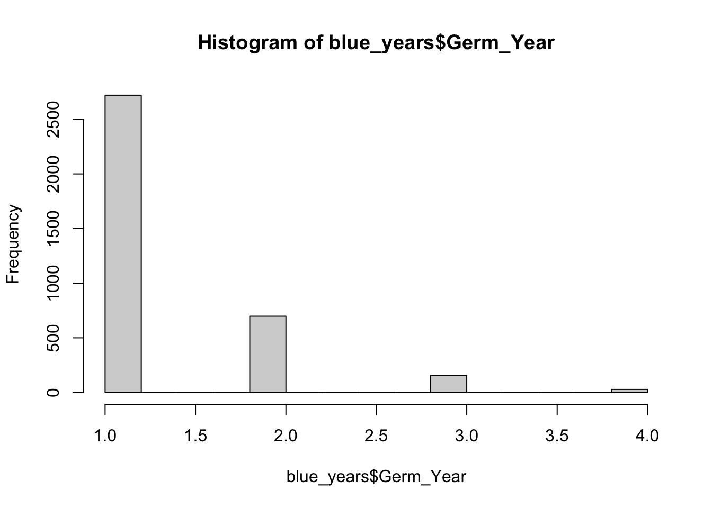
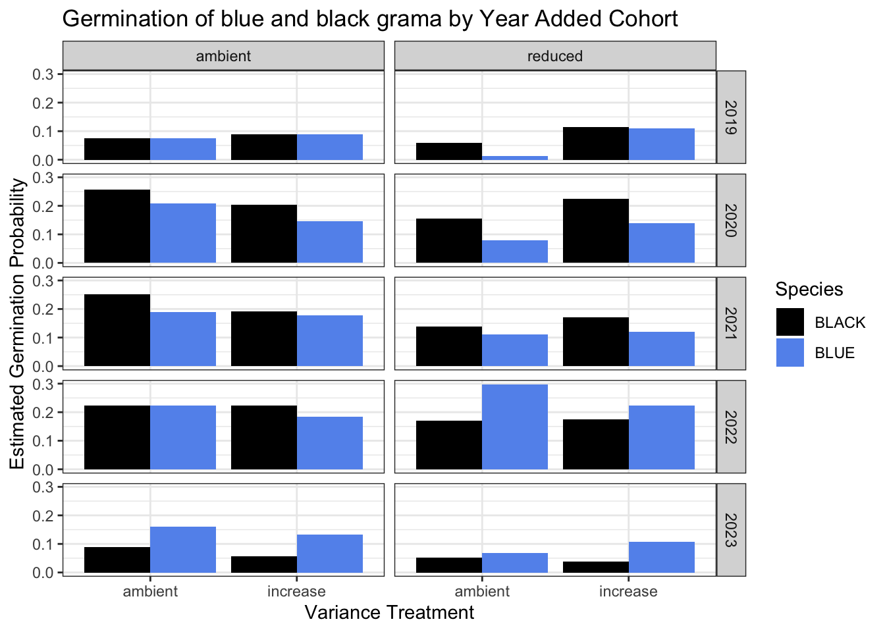
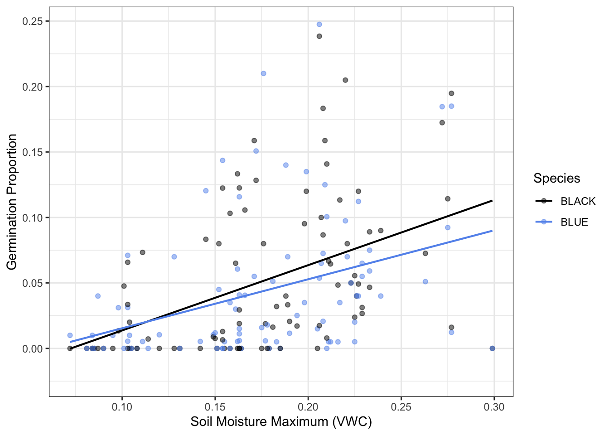
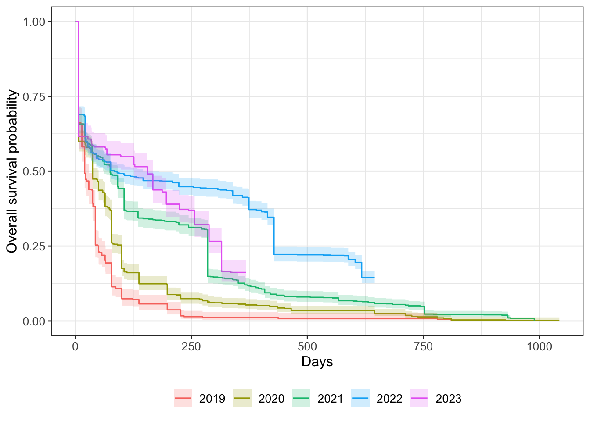
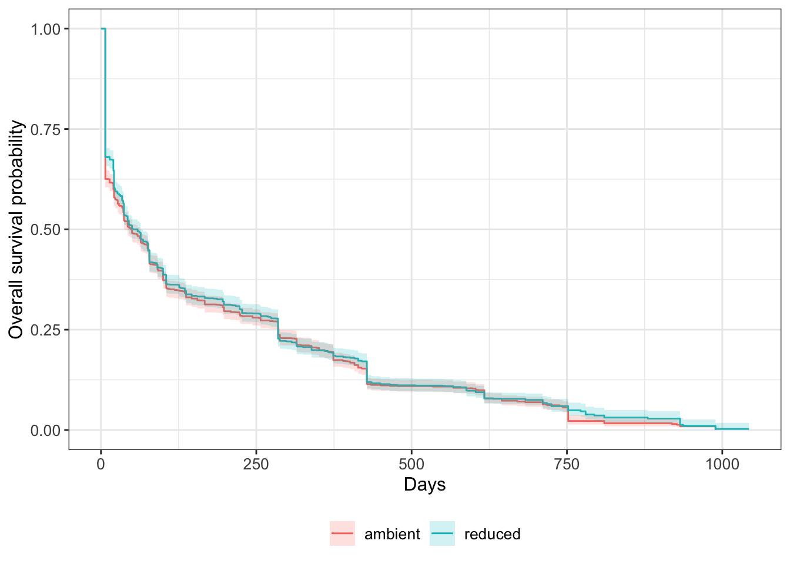
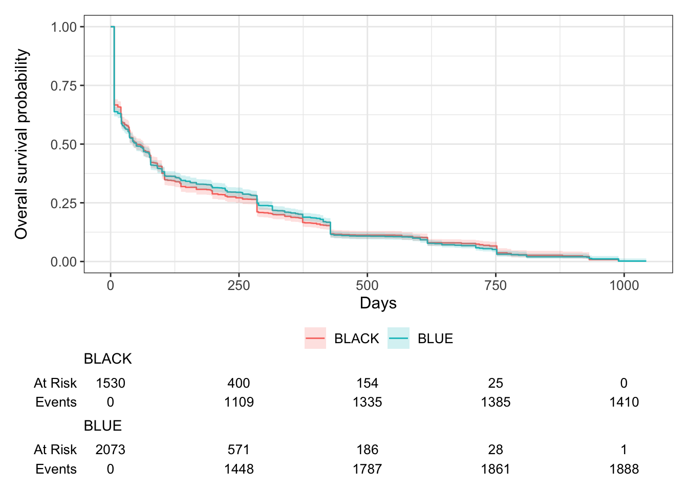
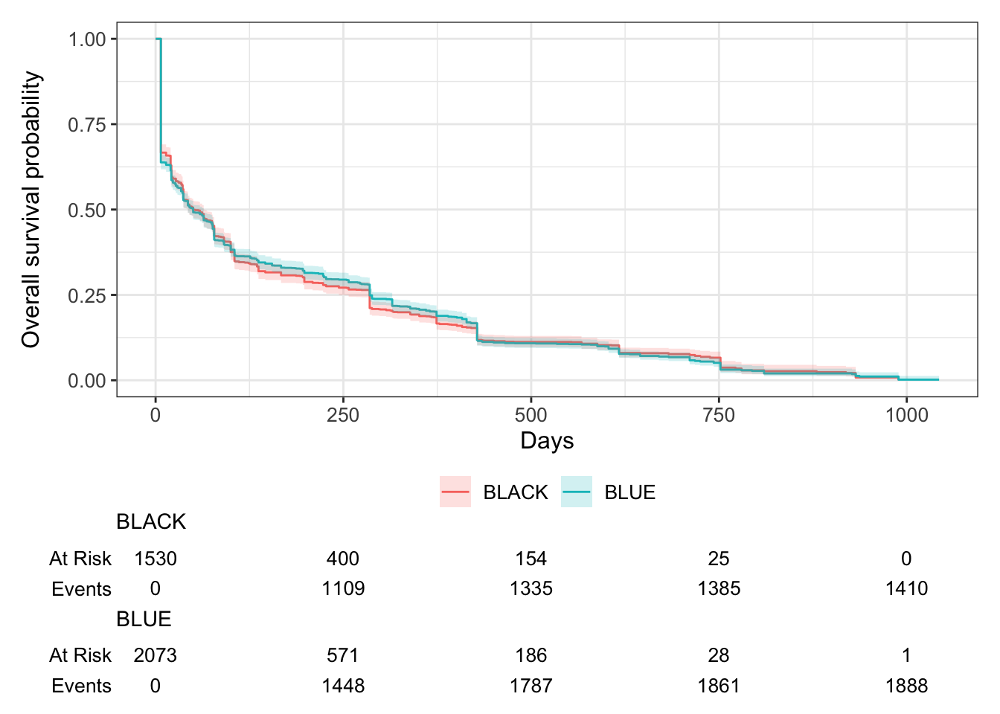
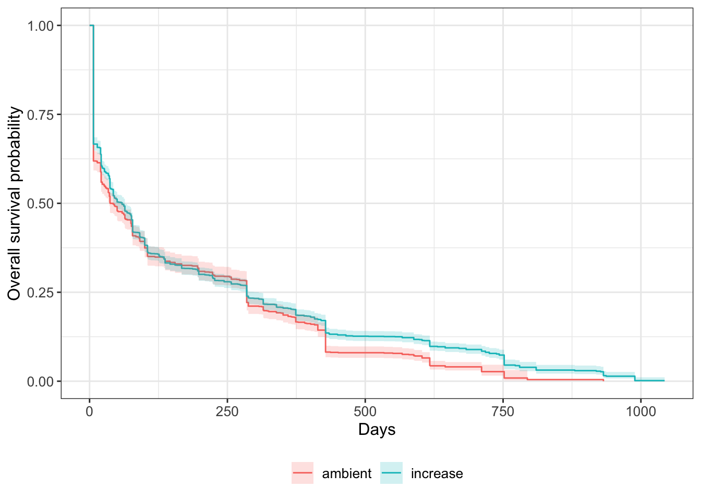

library(readr)
library(dplyr)
library(tidyr)
library(tidyverse)
library(ggplot2)
library(viridis) # colorblind friendly color palette
library(reshape2)
library(vegan)
library(lme4)
library(car)
library(readxl)
library(googlesheets4)
library(lubridate)
library(bbmle)
library(lmtest)
library(beepr)
library(survival)
# install.packages("ggsurvfit")
library(ggsurvfit)MVE Blue Seeds
Background
The Sevilleta Long Term Ecological Research (LTER) Program (Socorro, NM) rolled out a novel climate change experiment in 2019: the Mean-Variance Experiment (MVE). The experiment has been replicated in four ecosystems to date but the focus of this document is on the experimental infrastructure found in the Great Plains Grassland ecosystem, dominated by blue grama grass (Bouteloua gracilis). Hence Mean-Variance Blue or MVE Blue. The ecosystem is dominated by blue grama grass but the adjacent ecosystem, Chihuahuan Desert Grassland, is dominated by black grama grass (Bouteloua eriopoda). Great Plains Grassland extends northward throughout central North America while Chihuahuan Desert Grassland extends southward into Mexico. Thus, under a more arid climate, we would expect Chihuahuan Desert Grassland to expand it’s range northward. The experimental infrastructure is set near the ecotone of these two ecosystems. More information on this experiment can be found here: https://sevlter.unm.edu/mean-variance-experiment/. To test the recruitment dynamics of these dominant plants under climate change, we added seeds of each species to the experimental plots from 2019-2023 and tracked their germination and survival biweekly during the growing season and monthly during the dormant season.
Objectives
- Read in seed monitoring data for all five years, treatments, soil moisture data, climate data.
- Explore data, provide summary statistics.
- Create graph of typical climate for temperature and precipitation.
- Find the best model for the germination data using year and mean and variance treatments as predictors
- Graph germination by year, mean, and variance by species.
- Figure out the 1-3 events each year where 90-95% of germination occurs and isolate germination and soil moisture to those events and build a model to understand how soil moisture determines germination probability. Graph.
- Find best model of survival by species, year, and mean and variance treatments. Or a model for each species. Graph.
- Characterize die off/survival. Is it gradual and consistent or happen in major events like germination. Graph?
- Figure out how to test for legacy effects on germination and/or survival. Graph.
Setup
Read in necessary packages.
Clean and Wrangle Data
Bring in seed monitoring data for all five years, bring in keys, bring in soil moisture data, bring in climate data.
# print("Dont run this code")
# bring in each year of data (2019-2023, 5 years total)
# De-authorize googlesheets to bypass log-in
googlesheets4::gs4_deauth()
# Load in the data from google drive (make loop or function)
blue_2019 <- as.data.frame(googlesheets4::read_sheet(
ss="https://docs.google.com/spreadsheets/d/1BDSYfiaHBwYWqZEIeu27-rVX_AMyd407eGlDyf7hc6g/edit?gid=1889905658#gid=1889905658"))
blue_2020 <- as.data.frame(googlesheets4::read_sheet(
ss="https://docs.google.com/spreadsheets/d/1RfcWQR4zSo-6zbAwZbR5s9DhxPF_gderfNvnlOFTxLE/edit#gid=974160277"))
blue_2021 <- as.data.frame(googlesheets4::read_sheet(
ss="https://docs.google.com/spreadsheets/d/1Y6MBlHEawdBZKeywWfAKHqT4wDQxGLlTCyE1NG0Mfe8/edit#gid=1947016736"))
blue_2022 <- as.data.frame(googlesheets4::read_sheet(
ss="https://docs.google.com/spreadsheets/d/1bixaeVyjCgqI7d3j5kNcQwR9zRAd9duY9ipoA2uWvaY/edit#gid=1207134008"))
blue_2023 <- as.data.frame(googlesheets4::read_sheet(
ss="https://docs.google.com/spreadsheets/d/1712pb0TIKS5K3FU3-pRHc9oI3K6uavZMcF8a3YW8SHY/edit#gid=0"))
# Change column header dates to be readable by R (make loop or fxn)
names(blue_2019)[str_detect(names(blue_2019), "\\d{5}")] <-
format(as.Date(as.numeric(names(blue_2019)[str_detect(names(blue_2019), "\\d{5}")]), origin = "1899-12-30"), "%d-%b-%y")
names(blue_2020)[str_detect(names(blue_2020), "\\d{5}")] <-
format(as.Date(as.numeric(names(blue_2020)[str_detect(names(blue_2020), "\\d{5}")]), origin = "1899-12-30"), "%d-%b-%y")
names(blue_2021)[str_detect(names(blue_2021), "\\d{5}")] <-
format(as.Date(as.numeric(names(blue_2021)[str_detect(names(blue_2021), "\\d{5}")]), origin = "1899-12-30"), "%d-%b-%y")
names(blue_2022)[str_detect(names(blue_2022), "\\d{5}")] <-
format(as.Date(as.numeric(names(blue_2022)[str_detect(names(blue_2022), "\\d{5}")]), origin = "1899-12-30"), "%d-%b-%y")
names(blue_2023)[str_detect(names(blue_2023), "\\d{5}")] <-
format(as.Date(as.numeric(names(blue_2023)[str_detect(names(blue_2023), "\\d{5}")]), origin = "1899-12-30"), "%d-%b-%y")
# Give the cohort name for each dataframe (make loop or fxn)
blue_2019$Add_Year <- 2019
blue_2020$Add_Year <- 2020
blue_2021$Add_Year <- 2021
blue_2022$Add_Year <- 2022
blue_2023$Add_Year <- 2023
# convert columns to numeric (make loop or fxn)
blue_2019 <- blue_2019 %>%
mutate(across( # mutate observations in multiple columns
matches("\\d{1,2}-"), # that contain digits in the column name
as.numeric))
blue_2020 <- blue_2020 %>%
mutate(across( # mutate observations in multiple columns
matches("\\d{1,2}-"), # that contain digits in the column name
as.numeric))
blue_2021 <- blue_2021 %>%
mutate(across( # mutate observations in multiple columns
matches("\\d{1,2}-"), # that contain digits in the column name
as.numeric))
blue_2022 <- blue_2022 %>%
mutate(across( # mutate observations in multiple columns
matches("\\d{1,2}-"), # that contain digits in the column name
as.numeric))
blue_2023 <- blue_2023 %>%
mutate(across( # mutate observations in multiple columns
matches("\\d{1,2}-"), # that contain digits in the column name
as.numeric))
# make TP ID (make loop or fxn)
blue_2019$TP_ID<-
with(blue_2019,
paste0(Add_Year, Plot, Species, Corner, Row, Column))
blue_2020$TP_ID<-
with(blue_2020,
paste0(Add_Year, Plot, Species, Corner, Row, Column))
blue_2021$TP_ID<-
with(blue_2021,
paste0(Add_Year, Plot, Species, Corner, Row, Column))
blue_2022$TP_ID<-
with(blue_2022,
paste0(Add_Year, Plot, Species, Corner, Row, Column))
blue_2023$TP_ID<-
with(blue_2023,
paste0(Add_Year, Plot, Species, Corner, Row, Column))
# pivot long (make loop or fxn)
blue_2019_long <-
pivot_longer(blue_2019,
cols = c("2019-09-07":"2019-10-13"),
names_to = "Obs_Date",
values_to = "Germ.binom") %>%
mutate(Obs_Date=as.Date(Obs_Date,format="%Y-%m-%d")) # Format dates
unique(blue_2019_long$Obs_Date)
blue_2020_long <-
pivot_longer(blue_2020,
cols = c("7/31/2020":"6/2/2023"),
names_to = "Obs_Date",
values_to = "Germ.binom") %>%
mutate(Obs_Date=as.Date(Obs_Date,format="%m/%d/%Y")) # Format dates
unique(blue_2020_long$Obs_Date)
blue_2021_long <-
pivot_longer(blue_2021,
cols = c("2021-07-26":"2024-05-06"),
names_to = "Obs_Date",
values_to = "Germ.binom") %>%
mutate(Obs_Date=as.Date(Obs_Date,format="%Y-%m-%d")) # Format dates
unique(blue_2021_long$Obs_Date)
blue_2022_long <-
pivot_longer(blue_2022,
cols = c("2022-07-05":"2024-04-03"),
names_to = "Obs_Date",
values_to = "Germ.binom") %>%
mutate(Obs_Date=as.Date(Obs_Date,format="%Y-%m-%d"))
# Format dates
unique(blue_2022_long$Obs_Date)
blue_2023_long <-
pivot_longer(blue_2023,
cols = c("2023-07-07":"2024-08-05"),
names_to = "Obs_Date",
values_to = "Germ.binom") %>%
mutate(Obs_Date=as.Date(Obs_Date,format="%Y-%m-%d"))
# Format dates
unique(blue_2023_long$Obs_Date)
# reduce germ to 1 (make loop or function)
blue_2019_long <-
blue_2019_long %>%
mutate(
Germ.binom =
case_when(
Germ.binom == 1 ~ 1
, Germ.binom == 2 ~ 1
, Germ.binom == 3 ~ 1
, Germ.binom == 0 ~ 0
)
)
blue_2020_long <-
blue_2020_long %>%
mutate(
Germ.binom =
case_when(
Germ.binom == 1 ~ 1
, Germ.binom == 2 ~ 1
, Germ.binom == 3 ~ 1
, Germ.binom == 0 ~ 0
)
)
blue_2021_long <-
blue_2021_long %>%
mutate(
Germ.binom =
case_when(
Germ.binom == 1 ~ 1
, Germ.binom == 2 ~ 1
, Germ.binom == 3 ~ 1
, Germ.binom == 0 ~ 0
)
)
blue_2022_long <-
blue_2022_long %>%
mutate(
Germ.binom =
case_when(
Germ.binom == 1 ~ 1
, Germ.binom == 2 ~ 1
, Germ.binom == 3 ~ 1
, Germ.binom == 0 ~ 0
)
)
blue_2023_long <-
blue_2023_long %>%
mutate(
Germ.binom =
case_when(
Germ.binom == 1 ~ 1
, Germ.binom == 2 ~ 1
, Germ.binom == 3 ~ 1
, Germ.binom == 0 ~ 0
)
)
# order by germ binom then by obs date in order to rm duplicates (make loop or function)
blue_2019_long_reduced <- blue_2019_long[order(-blue_2019_long$Germ.binom, blue_2019_long$Obs_Date), ]
blue_2020_long_reduced <- blue_2020_long[order(-blue_2020_long$Germ.binom, blue_2020_long$Obs_Date), ]
blue_2021_long_reduced <- blue_2021_long[order(-blue_2021_long$Germ.binom, blue_2021_long$Obs_Date), ]
blue_2022_long_reduced <- blue_2022_long[order(-blue_2022_long$Germ.binom, blue_2022_long$Obs_Date), ]
blue_2023_long_reduced <- blue_2023_long[order(-blue_2023_long$Germ.binom, blue_2023_long$Obs_Date), ]
# remove duplicates (make loop or function)
blue_2019_long_reduced <- blue_2019_long_reduced %>%
distinct(TP_ID, Plot, Corner, Species, Row, Column, Add_Year, .keep_all = TRUE)
blue_2020_long_reduced <- blue_2020_long_reduced %>%
distinct(TP_ID, Plot, Corner, Species, Row, Column, Add_Year, .keep_all = TRUE)
blue_2021_long_reduced <- blue_2021_long_reduced %>%
distinct(TP_ID, Plot, Corner, Species, Row, Column, Add_Year, .keep_all = TRUE)
blue_2022_long_reduced <- blue_2022_long_reduced %>%
distinct(TP_ID, Plot, Corner, Species, Row, Column, Add_Year, .keep_all = TRUE)
blue_2023_long_reduced <- blue_2023_long_reduced %>%
distinct(TP_ID, Plot, Corner, Species, Row, Column, Add_Year, .keep_all = TRUE)
# Get each year ready fro rbind (make loop or fxn)
blue_2019_long_reduced <-
blue_2019_long_reduced %>%
select(
Plot,
Corner,
Species,
Row,
Column,
TP_ID,
Add_Year,
Obs_Date,
Germ.binom
)
blue_2020_long_reduced <-
blue_2020_long_reduced %>%
select(
Plot,
Corner,
Species,
Row,
Column,
TP_ID,
Add_Year,
Obs_Date,
Germ.binom
)
blue_2021_long_reduced <-
blue_2021_long_reduced %>%
select(
Plot,
Corner,
Species,
Row,
Column,
TP_ID,
Add_Year,
Obs_Date,
Germ.binom
)
blue_2022_long_reduced <-
blue_2022_long_reduced %>%
select(
Plot,
Corner,
Species,
Row,
Column,
TP_ID,
Add_Year,
Obs_Date,
Germ.binom
)
blue_2023_long_reduced <-
blue_2023_long_reduced %>%
select(
Plot,
Corner,
Species,
Row,
Column,
TP_ID,
Add_Year,
Obs_Date,
Germ.binom
)
blue_19_23_reduced <- rbind(
blue_2019_long_reduced,
blue_2020_long_reduced,
blue_2021_long_reduced,
blue_2022_long_reduced,
blue_2023_long_reduced
)
summary(blue_19_23_reduced)
write_csv(blue_19_23_reduced, "germ_19_23.csv")Create an alternative dataset that preserves raw data.
# Get each year ready for rbind (make loop or fxn)
blue_2019_long <-
blue_2019_long %>%
select(
Plot,
Corner,
Species,
Row,
Column,
TP_ID,
Add_Year,
Obs_Date,
Germ.binom
)
blue_2020_long <-
blue_2020_long %>%
select(
Plot,
Corner,
Species,
Row,
Column,
TP_ID,
Add_Year,
Obs_Date,
Germ.binom
)
blue_2021_long <-
blue_2021_long %>%
select(
Plot,
Corner,
Species,
Row,
Column,
TP_ID,
Add_Year,
Obs_Date,
Germ.binom
)
blue_2022_long <-
blue_2022_long %>%
select(
Plot,
Corner,
Species,
Row,
Column,
TP_ID,
Add_Year,
Obs_Date,
Germ.binom
)
blue_2023_long <-
blue_2023_long %>%
select(
Plot,
Corner,
Species,
Row,
Column,
TP_ID,
Add_Year,
Obs_Date,
Germ.binom
)
blue_19_23_long_raw <- rbind(
blue_2019_long,
blue_2020_long,
blue_2021_long,
blue_2022_long,
blue_2023_long
)
write_csv(blue_19_23_long_raw, "germ_19_23_long_raw.csv")
# use this for soil moistureMake a data frame that looks at the current year and past year cohorts for each monsoon season. Those will be the trials for probability. But first confirm that most germination happens in first two years.
# first look at germination over time by data for each year added -- I expect that we can reduce each one the year planted and the year after, so as to not inflate zeros
# use previously reduced data
blue_19_23 <- read_csv("germ_19_23.csv")Rows: 26581 Columns: 9
── Column specification ────────────────────────────────────────────────────────
Delimiter: ","
chr (4): Corner, Species, Column, TP_ID
dbl (4): Plot, Row, Add_Year, Germ.binom
date (1): Obs_Date
ℹ Use `spec()` to retrieve the full column specification for this data.
ℹ Specify the column types or set `show_col_types = FALSE` to quiet this message.# Isolate by year
blue_19 <- blue_19_23 %>%
filter(Add_Year == 2019 & Germ.binom == 1) %>%
mutate(Germ_Year = year(Obs_Date)-2018)
# hist(blue_19$Germ_Year)
blue_20 <- blue_19_23 %>%
filter(Add_Year == 2020 & Germ.binom == 1) %>%
mutate(Germ_Year = year(Obs_Date) - 2019)
# hist(blue_20$Germ_Year)
blue_21 <- blue_19_23 %>%
filter(Add_Year == 2021 & Germ.binom == 1) %>%
mutate(Germ_Year = year(Obs_Date) - 2020)
# hist(blue_21$Germ_Year)
blue_22 <- blue_19_23 %>%
filter(Add_Year == 2022 & Germ.binom == 1) %>%
mutate(Germ_Year = year(Obs_Date) - 2021)
# hist(blue_22$Germ_Year)
blue_23 <- blue_19_23 %>%
filter(Add_Year == 2023 & Germ.binom == 1) %>%
mutate(Germ_Year = year(Obs_Date) - 2022)
# hist(blue_23$Germ_Year)
blue_years <- rbind(blue_19, blue_20, blue_21, blue_22, blue_23)
hist(blue_years$Germ_Year)
total <- sum(blue_years$Germ.binom)
# get some percentages
year_sum <- blue_years %>%
group_by(Germ_Year) %>%
summarise(percent = (sum(Germ.binom)/total)*100)75% of germinated seeds occur in their first year, 20% occur in second year, 4% in the third and 0.77% in 4th year.
Sufficient evidence to reduce to first year and second year.
# Make a dataframe for each years crops of available seeds to germ
blue_19_23_long_raw <- read_csv("germ_19_23_long_raw.csv")
summary(blue_19_23_long_raw)
# reduce to observations in the first and second year
blue_2yrs <- blue_19_23_long_raw %>%
filter(year(Obs_Date) < Add_Year+2)
# check your work
which(blue_2yrs$Add_Year == 2023 & year(blue_2yrs$Obs_Date) > 2024)
blue_2yrs$Obs_Year <- year(blue_2yrs$Obs_Date)
blue_2yrs <- blue_2yrs %>%
mutate(Year = case_when(Obs_Year == Add_Year ~ 1,
Obs_Year == Add_Year+1 ~ 2))
# Reduce to germination or zero germination per year
# If it germinates in Year = 1 it should be removed from Year = 2
blue_Y1 <- blue_2yrs %>%
filter(Year == 1)
blue_Y1 <- blue_Y1[order(-blue_Y1$Germ.binom, blue_Y1$Obs_Date), ]
# remove duplicates (make loop or function)
blue_Y1 <- blue_Y1 %>%
distinct(TP_ID, Plot, Corner, Species, Row, Column, Add_Year, .keep_all = TRUE)
blue_Y2 <- blue_2yrs %>%
filter(Year == 2)
blue_Y2 <- blue_Y1[order(-blue_Y2$Germ.binom, blue_Y2$Obs_Date), ]
# remove duplicates (make loop or function)
blue_Y2 <- blue_Y2 %>%
distinct(TP_ID, Plot, Corner, Species, Row, Column, Add_Year, .keep_all = TRUE)
# Remove TP_IDs that germinated in Y1 from Y2
head(blue_Y1)
germs <- blue_Y1$TP_ID[which(blue_Y1$Germ.binom == 1)]
blue_Y2_filt <- blue_Y2 %>%
group_by(TP_ID) %>%
filter(!any(TP_ID %in% c(germs))) %>%
ungroup()
which(blue_Y2_filt$TP_ID == "202116BLUENE1G")
blue_y1_y2 <- rbind(blue_Y1, blue_Y2_filt)
blue_y1_y2 <- blue_y1_y2 %>%
mutate(plot = Plot)
write_csv(blue_y1_y2, "blue_year_cohorts.csv")Create a dataset limited to the major soil moisture germination events. Isolate each Observation Year to the two (or three) events with the most germination. Then pair with soil moisture data from plots.
There’s one date for each year with the most germination event and then 4/5 years have a smaller secondary event. 2021 has several aftershock events.
You could get a string of dates with germination events and then filter the blue_yr_trt dataframe by those dates and keep the maximum for each year, that would be the easiest for calculating probability because the denominator is just obs year. But more robust would be top two germ events.
str(blue_yr_trt)
# This shows the high germination event for each observation year
blue_yr_trt_19_1 <- blue_yr_trt %>%
filter(Germ.binom == 1 & Obs_Year == 2019)
blue_yr_trt_20_1 <- blue_yr_trt %>%
filter(Germ.binom == 1 & Obs_Year == 2020)
blue_yr_trt_21_1 <- blue_yr_trt %>%
filter(Germ.binom == 1 & Obs_Year == 2021)
blue_yr_trt_22_1 <- blue_yr_trt %>%
filter(Germ.binom == 1 & Obs_Year == 2022)
blue_yr_trt_23_1 <- blue_yr_trt %>%
filter(Germ.binom == 1 & Obs_Year == 2023)
hist(blue_yr_trt_19_1$Obs_Date, "days")
hist(blue_yr_trt_20_1$Obs_Date, "days")
hist(blue_yr_trt_21_1$Obs_Date, "days")
hist(blue_yr_trt_22_1$Obs_Date, "days")
hist(blue_yr_trt_23_1$Obs_Date, "days")
# Create list of events
germ_sm_sum <- blue_yr_trt %>%
group_by(Obs_Date,Obs_Year) %>%
summarise(sum = sum(Germ.binom))
germ_sm_sum_yr <- blue_yr_trt %>%
group_by(Obs_Year) %>%
summarise(sumtotal = sum(Germ.binom))
germ_sum_per <- left_join(germ_sm_sum, germ_sm_sum_yr, by = join_by(Obs_Year))
germ_sum_per$percent_yr <- germ_sum_per$sum/germ_sum_per$sumtotal
# A few ways to cut it.
# The single biggest germ event
# The n biggest events that add up to 95% of germination occurrence
# All events with over 1% of germs
germ_percent_events <- germ_sum_per %>%
filter(percent_yr > 0.05)
nrow(germ_percent_events)
germ_percent_events$event_num <- c(1:8)
events <- germ_percent_events[,c(1,6)]
# Figure out how to remove success germination TPs from following event
# Use the long form, original raw data. limited to first two years
str(blue_2yrs)
# These are the key germination events
events$Obs_Date
# I need each Obs Date to include toothpicks that germinated for the first time on that day, and all other toothpicks that didn't germinate on that day and never have up to that point
# remove TP_IDs that germinated before event 1
germ1 <- blue_2yrs$TP_ID[which(blue_2yrs$Germ.binom == 1 & blue_2yrs$Obs_Date < events$Obs_Date[1])]
# include all remaining toothpicks present for event 1
event1 <- blue_2yrs %>%
filter(Obs_Date == events$Obs_Date[1])
event1 <- event1 %>%
group_by(TP_ID) %>%
filter(!any(TP_ID %in% c(germ1))) %>%
ungroup()
# remove TP IDs that germinated before event 2
germ2 <- blue_2yrs$TP_ID[which(blue_2yrs$Germ.binom == 1 & blue_2yrs$Obs_Date < events$Obs_Date[2])]
# check your work
length(unique(germ2))
10505-length(unique(germ2))
# include all remaining toothpicks present for event 2
event2 <- blue_2yrs %>%
filter(Obs_Date == events$Obs_Date[2])
event2 <- event2 %>%
group_by(TP_ID) %>%
filter(!any(TP_ID %in% c(germ2))) %>%
ungroup()
# remove TP IDs that germinated before event 3
germ3 <- unique(blue_2yrs$TP_ID[which(blue_2yrs$Germ.binom == 1 & blue_2yrs$Obs_Date < events$Obs_Date[3] & blue_2yrs$Obs_Year == 2021)])
length(germ3)
# include all remaining toothpicks present for event 3
event3 <- blue_2yrs %>%
filter(Obs_Date == events$Obs_Date[3])
9776-length(germ3) # check your work
event3 <- event3 %>%
group_by(TP_ID) %>%
filter(!any(TP_ID %in% c(germ3))) %>%
ungroup()
# remove TP IDs that germinated before event 4
germ4 <- unique(blue_2yrs$TP_ID[which(blue_2yrs$Germ.binom == 1 & blue_2yrs$Obs_Date < events$Obs_Date[4] & blue_2yrs$Obs_Year == 2021)])
length(germ4)
# include all remaining toothpicks present for event 4
event4 <- blue_2yrs %>%
filter(Obs_Date == events$Obs_Date[4])
9776-length(germ4) # check your work
event4 <- event4 %>%
group_by(TP_ID) %>%
filter(!any(TP_ID %in% c(germ4))) %>%
ungroup()
# remove TP IDs that germinated before event 5
germ5 <- unique(blue_2yrs$TP_ID[which(blue_2yrs$Germ.binom == 1 & blue_2yrs$Obs_Date < events$Obs_Date[5] & blue_2yrs$Obs_Year == 2022)])
length(germ5)
# include all remaining toothpicks present for event 4
event5 <- blue_2yrs %>%
filter(Obs_Date == events$Obs_Date[5])
nrow(event5)-length(germ5) # check your work
event5 <- event5 %>%
group_by(TP_ID) %>%
filter(!any(TP_ID %in% c(germ5))) %>%
ungroup()
# remove TP IDs that germinated before event 6
germ6 <- unique(blue_2yrs$TP_ID[which(blue_2yrs$Germ.binom == 1 & blue_2yrs$Obs_Date < events$Obs_Date[6] & blue_2yrs$Obs_Year == 2022)])
length(germ6)
# include all remaining toothpicks present for event 6
event6 <- blue_2yrs %>%
filter(Obs_Date == events$Obs_Date[6])
nrow(event6)-length(germ6) # check your work
event6 <- event6 %>%
group_by(TP_ID) %>%
filter(!any(TP_ID %in% c(germ6))) %>%
ungroup()
# remove TP IDs that germinated before event 7
germ7 <- unique(blue_2yrs$TP_ID[which(blue_2yrs$Germ.binom == 1 & blue_2yrs$Obs_Date < events$Obs_Date[7] & blue_2yrs$Obs_Year == 2023)])
length(germ7)
# include all remaining toothpicks present for event 7
event7 <- blue_2yrs %>%
filter(Obs_Date == events$Obs_Date[7])
nrow(event7)-length(germ7) # check your work
event7 <- event7 %>%
group_by(TP_ID) %>%
filter(!any(TP_ID %in% c(germ7))) %>%
ungroup()
# remove TP IDs that germinated before event 8
germ8 <- unique(blue_2yrs$TP_ID[which(blue_2yrs$Germ.binom == 1 & blue_2yrs$Obs_Date < events$Obs_Date[8] & blue_2yrs$Obs_Year == 2023)])
length(germ8)
# include all remaining toothpicks present for event 7
event8 <- blue_2yrs %>%
filter(Obs_Date == events$Obs_Date[8])
nrow(event8)-length(germ8) # check your work
event8 <- event8 %>%
group_by(TP_ID) %>%
filter(!any(TP_ID %in% c(germ8))) %>%
ungroup()
sm_germ_events <- rbind(event1,
event2,
event3,
event4,
event5,
event6,
event7,
event8)
write_csv(sm_germ_events, "germ_events_sm.csv")trts<-read.csv("meanvar_blue_treatments.csv")
str(trts)# path to where the load_MVE_data_into_R.R file is located - CHANGE THIS TO THE PATH ON YOUR COMPUTER
source("load_MVE_data_into_R.R")
process_mve <- function(site, year_to_process) {
# process_mve function:
#
# Takes raw .dat MVE files as input and produces a long version of the data the data
# as output.
#
# Function arguments:
# site: "blue", "black", "creosote", "pj", "jsav" are the choices for site, entered into
# the function with quotes
# year: 4-digit year (YYYY) entered into the function without quotes
# subsets data to be >= to year requested here
filter_to_year <- year_to_process
# folder where final data will be written - CHANGE THIS TO THE PATH ON YOUR COMPUTER WHERE YOU
# WANT TO WRITE OUT THE PROCESSED FILES
folder_out <- "MVE-seeds"
# name of final output file for year of data being processed
sub_file_name <- if (site == 'blue') {
paste0("MVE_PlainsGrassland_SoilMoistureTemperature_", filter_to_year, ".csv")
} else if (site == "black") {
paste0("MVE_DesertGrassland_SoilMoistureTemperature_", filter_to_year, ".csv")
} else if (site == "creosote") {
paste0("MVE_Creosote_SoilMoistureTemperature_", filter_to_year, ".csv")
} else if (site == "pj") {
paste0("MVE_PJ_SoilMoistureTemperature_", filter_to_year, ".csv")
} else if (site == "jsav") {
paste0("MVE_JSav_SoilMoistureTemperature_", filter_to_year, ".csv")
}
# load MVE data ------------------------------------------------------------
file_to_load <- if (site == "blue") {
"MVE_Blue.dat"
} else if (site == "black") {
"MVE_Black.dat"
} else if (site == "creosote") {
"MVE_Creosote.dat"
} else if (site == "pj") {
"MVE_PJ_Table1_52423_MVC_2023_05_24_10_49_50.dat"
} else if (site == "jsav") {
"MVE_JSAV_Table1_52423_MVC_2023_05_24_12_46_59.dat"
} else {
NULL
}
mve <- read_mve_in(file_to_load) |>
select(-RECORD)
# Note: For Blue, data prior to 2022-10-04 08:00:00 needs to be loaded from a file
# because the data loggers were reset to capture data from some new sensors that
# were installed.
# loading file for old MVE Blue data -
mve_blue_old <- if (site == "blue") {
read_mve_in("MVE_Blue.dat.backup") |>
mutate(VWC_P2_12_NEW = as.numeric(NA), # Need to add these new variables as NAs to old data in order to combine with newer data
VWC_P2_22_NEW = as.numeric(NA),
VWC_P2_37_NEW = as.numeric(NA)) |>
select(-RECORD)
} else {
NULL
}
mve_sub <- if (site == "blue") {
rbind(mve, mve_blue_old) |>
arrange(TIMESTAMP) |>
unique() |>
filter(year(TIMESTAMP) == filter_to_year)
} else {
mve |>
arrange(TIMESTAMP) |>
unique() |>
filter(year(TIMESTAMP) == filter_to_year)
}
mve_sub_long <- if (site == "blue") {
mve_sub |>
pivot_longer(-TIMESTAMP, names_to = "sensor_id") |>
separate(sensor_id, into = c("sensor", "plot", "depth", "new"), sep = "_", remove = FALSE)
} else if (site == "black") {
mve_sub |>
pivot_longer(-TIMESTAMP, names_to = "sensor_id") |>
separate(sensor_id, into = c("plot", "depth", "sensor", "avg"), sep = "_", remove = FALSE)
} else if (site == "creosote") {
mve_sub |>
pivot_longer(-TIMESTAMP, names_to = "sensor_id") |>
separate(sensor_id, into = c("sensor", "piece1", "piece2", "piece3", "avg"), sep = "_", remove = FALSE) |>
mutate(plot1split = ifelse(piece1 %in% c(2, 3), NA, piece1),
plot2split = ifelse(piece2 %in% c(12, 22, 37), NA, piece2),
depth1split = ifelse(piece2 %in% c(12, 22, 37), piece2, NA),
depth2split = ifelse(piece3 %in% c(12, 22, 37), piece3, NA),
plot_extra = ifelse(piece1 %in% c(2, 3), piece1, NA),
plot = ifelse((!is.na(plot1split) & is.na(plot2split)), plot1split, plot2split),
depth = ifelse((!is.na(depth1split) & is.na(depth2split)), depth1split, depth2split)) |>
select(-c(avg, piece1, piece2, piece3, plot1split, plot2split, depth1split, depth2split))
} else if (site == "pj") {
mve_sub |>
pivot_longer(-TIMESTAMP, names_to = "sensor_id") |>
separate(sensor_id, into = c("sensor", "piece1", "piece2", "piece3", "piece4"), sep = "_", remove = FALSE) |>
mutate(plot1split = ifelse(piece1 %in% c(2, 3), NA, piece1),
plot2split = ifelse(piece2 %in% c(12, 22, 37), NA, piece2),
depth1split = ifelse(piece2 %in% c(12, 22, 37), piece2, NA),
depth2split = ifelse(piece3 %in% c(12, 22, 37), piece3, NA),
plot_extra = ifelse(piece1 %in% c(2, 3), piece1, NA),
plot = ifelse((!is.na(plot1split) & is.na(plot2split)), plot1split, plot2split),
depth = ifelse((!is.na(depth1split) & is.na(depth2split)), depth1split, depth2split)) |>
select(-c(piece1, piece2, piece3, piece4, plot1split, plot2split, depth1split, depth2split))
} else if (site == "jsav") {
mve_sub |>
pivot_longer(-TIMESTAMP, names_to = "sensor_id") |>
separate(sensor_id, into = c("sensor", "piece1", "piece2", "piece3", "piece4"), sep = "_", remove = FALSE) |>
mutate(plot1split = ifelse(piece1 %in% c(2, 3), NA, piece1),
plot2split = ifelse(piece2 %in% c(12, 22, 37), NA, piece2),
depth1split = ifelse(piece2 %in% c(12, 22, 37), piece2, NA),
depth2split = ifelse(piece3 %in% c(12, 22, 37), piece3, NA),
plot_extra = ifelse(piece1 %in% c(2, 3), piece1, NA),
plot = ifelse((!is.na(plot1split) & is.na(plot2split)), plot1split, plot2split),
depth = ifelse((!is.na(depth1split) & is.na(depth2split)), depth1split, depth2split)) |>
select(-c(piece1, piece2, piece3, piece4, plot1split, plot2split, depth1split, depth2split))
} else {
NULL
}
write_csv(mve_sub_long, paste0(folder_out, sub_file_name))
return(paste("Data processing complete for site", site, "for year", year_to_process))
}
# Note: you will get a warning message when running the function because of how the
# raw data is formatted and needs to be processed.
# running these functions writes processed data to the output folder - only need to do once
# for prior years, but need to run the current year each time you get new, updated raw data
process_mve("blue", 2023)
process_mve("blue", 2022)
process_mve("blue", 2021)
process_mve("blue", 2020)
process_mve("blue", 2019)
process_mve("blue", 2018)
sm_t_18 <- read_csv("MVE-seedsMVE_PlainsGrassland_SoilMoistureTemperature_2018.csv")
sm_t_19 <- read_csv("MVE-seedsMVE_PlainsGrassland_SoilMoistureTemperature_2019.csv")
sm_t_20 <- read_csv("MVE-seedsMVE_PlainsGrassland_SoilMoistureTemperature_2020.csv")
sm_t_21 <- read_csv("MVE-seedsMVE_PlainsGrassland_SoilMoistureTemperature_2021.csv")
sm_t_22 <- read_csv("MVE-seedsMVE_PlainsGrassland_SoilMoistureTemperature_2022.csv")
sm_t_23 <- read_csv("MVE-seedsMVE_PlainsGrassland_SoilMoistureTemperature_2023.csv")met_00_04 <- read_csv("https://portal.edirepository.org/nis/dataviewer?packageid=knb-lter-sev.1.17&entityid=371109f8068b35cf65edc8ba4237c8bd")
met_05_09 <- read_csv("https://portal.edirepository.org/nis/dataviewer?packageid=knb-lter-sev.1.17&entityid=e326dbe48c0cdc5b91496a469a50e36d")
met_10_14 <- read_csv("https://portal.edirepository.org/nis/dataviewer?packageid=knb-lter-sev.1.17&entityid=011fd6eb9726321cace6c72b50cb8056")
met_15_19 <- read_csv("https://portal.edirepository.org/nis/dataviewer?packageid=knb-lter-sev.1.17&entityid=76922a0b041ac5ab05be6132ff7f90d7")
met_20_23 <- read_csv("https://portal.edirepository.org/nis/dataviewer?packageid=knb-lter-sev.1.17&entityid=65056476604ff22cb44dcc3d3bebfd2a")
unique(met_00_04$StationID)
met_00_04_50 <- met_00_04 %>%
filter(StationID == 50) %>%
select(StationID,
Date_Time,
Date,
Year,
Month,
Day_of_Month,
Julian_Day,
Hour,
Temp_C,
Min_Temp_C,
Max_Temp_C,
Precipitation)
unique(met_00_04_50$StationID)
str(met_00_04_50)
unique(met_05_09$StationID)
met_05_09_50 <- met_05_09 %>%
filter(StationID == 50) %>%
select(StationID,
Date_Time,
Date,
Year,
Month,
Day_of_Month,
Julian_Day,
Hour,
Temp_C,
Min_Temp_C,
Max_Temp_C,
Precipitation)
unique(met_05_09_50$StationID)
unique(met_10_14$StationID)
met_10_14_50 <- met_10_14 %>%
filter(StationID == 50) %>%
select(StationID,
Date_Time,
Date,
Year,
Month,
Day_of_Month,
Julian_Day,
Hour,
Temp_C,
Min_Temp_C,
Max_Temp_C,
Precipitation)
unique(met_10_14_50$StationID)
unique(met_15_19$StationID)
met_15_19_50 <- met_15_19 %>%
filter(StationID == 50) %>%
select(StationID,
Date_Time,
Date,
Year,
Month,
Day_of_Month,
Julian_Day,
Hour,
Temp_C,
Min_Temp_C,
Max_Temp_C,
Precipitation)
unique(met_15_19_50$StationID)
unique(met_20_23$StationID)
met_20_23_50 <- met_20_23 %>%
filter(StationID == 50) %>%
select(StationID,
Date_Time,
Date,
Year,
Month,
Day_of_Month,
Julian_Day,
Hour,
Temp_C,
Min_Temp_C,
Max_Temp_C,
Precipitation)
unique(met_20_23_50$StationID)
met_00_23_50 <- rbind(met_00_04_50,
met_05_09_50,
met_10_14_50,
met_15_19_50,
met_20_23_50)
write_csv(met_00_23_50, "met_50.csv")str(blue_19_23_long_raw)
head(blue_19_23_long_raw)
# need a new dataset taking the first date of germination and first date of zero
# could start by filtering only those TPs that germinated at all
TPs <- unique(blue_19_23_long_raw$TP_ID)
TP_list <- blue_19_23_long_raw %>%
filter(Germ.binom == 1)
TP_list <- unique(TP_list$TP_ID)
str(TP_list)
blue_19_23_surv <- blue_19_23_long_raw %>%
group_by(TP_ID) %>%
filter(any(TP_ID %in% c(TP_list))) %>%
ungroup()# Check that these accurately represent the last day of the survey for each cohort:
max_dates <- blue_19_23_long_raw %>%
group_by(Add_Year) %>%
summarise(max_date = max(Obs_Date))
max_dates[which(max_dates$Add_Year == 2019),2]
last_2019 <- max_dates[which(max_dates$Add_Year == 2019),2]
last_2020 <- max_dates[which(max_dates$Add_Year == 2020),2]
last_2021 <- max_dates[which(max_dates$Add_Year == 2021),2]
last_2022 <- max_dates[which(max_dates$Add_Year == 2022),2]
last_2023 <- max_dates[which(max_dates$Add_Year == 2023),2]
surv <- blue_19_23_surv %>%
group_by(TP_ID) %>%
subset(Germ.binom>0) %>%
mutate(Species = Species,
Add_Year = Add_Year,
Plot = Plot,
Corner = Corner,
TP_ID = as.factor(TP_ID),
Germ.binom = 1,
Germ_date = min(Obs_Date),
Last_Obs = max(Obs_Date),
Death_date = max(Obs_Date)+7,
Surv_days =
as.numeric(difftime((max(Obs_Date)+7),
min(Obs_Date),
units = "days")),
Status = 1
) %>%
# specify if death was observed (status 1)
# or survival time was censored (status 0), seedling still alive at last census
mutate(Status=
case_when(
Add_Year == 2020 & Last_Obs == last_2020 ~ 0,
Add_Year == 2021 & Last_Obs == last_2021 ~ 0,
Add_Year == 2022 & Last_Obs == last_2022 ~ 0,
Add_Year == 2023 & Last_Obs == last_2023 ~ 0,
.default = 1
)) %>%
select(TP_ID,
Add_Year,
Plot,
Species,
Germ_date,
Last_Obs,
Death_date,
Surv_days,
Status) %>%
distinct()
summary(surv)
write_csv(surv, "surv_19_23.csv")Read in Cleaned Data
These are all the datasets cleaned above, this saves R time.
blue_19_23 <- read_csv("germ_19_23.csv") # reduced to only first germ
blue_19_23_long_raw <- read_csv("germ_19_23_long_raw.csv") # All binomial observations from first germ through survival
bluebyyear <- read_csv("blue_year_cohorts.csv")
germ_sm <- read_csv("germ_events_sm.csv")
surv <- read_csv("surv_19_23.csv")
trts<-read.csv("meanvar_blue_treatments.csv")
sm_t_18 <- read_csv("MVE-seedsMVE_PlainsGrassland_SoilMoistureTemperature_2018.csv")
sm_t_19 <- read_csv("MVE-seedsMVE_PlainsGrassland_SoilMoistureTemperature_2019.csv")
sm_t_20 <- read_csv("MVE-seedsMVE_PlainsGrassland_SoilMoistureTemperature_2020.csv")
sm_t_21 <- read_csv("MVE-seedsMVE_PlainsGrassland_SoilMoistureTemperature_2021.csv")
sm_t_22 <- read_csv("MVE-seedsMVE_PlainsGrassland_SoilMoistureTemperature_2022.csv")
sm_t_23 <- read_csv("MVE-seedsMVE_PlainsGrassland_SoilMoistureTemperature_2023.csv")
met_00_23_50 <- read_csv("met_50.csv")Visualize rain + soil moisture for events
str(germ_sm)
head(germ_sm)
events <- as.Date(unique(germ_sm$Obs_Date))
# Need to merge this data set with soil moisture and temperature metrics which are in their own years (sm_t_18-sm_t_23)
head(sm_t_18)
# We can merge all soil moisture frames and then filter by event dates
sm_t <- rbind(sm_t_18,
sm_t_19,
sm_t_20,
sm_t_21,
sm_t_22,
sm_t_23)
# Let's explore what the data looks like around a rain event
# Because those are the germination events but not necessarily the rain events, which could have been two to four weeks before
# Break out timestamp column into date and time
head(sm_t$TIMESTAMP)
sm_t$Date <- date(sm_t$TIMESTAMP)
head(sm_t$Date)
# Filter sm_t by each date and 28 days before and two days after.
# (perfect opp for a loop)
sm_t_event_1 <- sm_t %>%
group_by(Date) %>%
filter(any(Date > (events[1]-28) & Date < (events[1]+2))) %>%
filter(sensor == "VWC" & depth == 12) %>%
mutate(event = "event_1") %>%
ungroup()
sm_event_sum_1 <- sm_t_event_1 %>%
group_by(Date) %>%
summarise(avg_sm = mean(value, na.rm = TRUE),
max_sm = max(value, na.rm = TRUE))
sm_t_event_2 <- sm_t %>%
group_by(Date) %>%
filter(any(Date > (events[2]-28) & Date < (events[2]+2))) %>%
filter(sensor == "VWC" & depth == 12) %>%
mutate(event = "event_2") %>%
ungroup()
unique(sm_t_event_2$Date)
sm_event_sum_2 <- sm_t_event_2 %>%
group_by(Date) %>%
summarise(avg_sm = mean(value, na.rm = TRUE),
max_sm = max(value, na.rm = TRUE))
sm_t_event_3 <- sm_t %>%
group_by(Date) %>%
filter(any(Date > (events[3]-28) & Date < (events[3]+2))) %>%
filter(sensor == "VWC" & depth == 12) %>%
mutate(event = "event_3") %>%
ungroup()
unique(sm_t_event_3$Date)
sm_event_sum_3 <- sm_t_event_3 %>%
group_by(Date) %>%
summarise(avg_sm = mean(value, na.rm = TRUE),
max_sm = max(value, na.rm = TRUE))
sm_t_event_4 <- sm_t %>%
group_by(Date) %>%
filter(any(Date > (events[4]-28) & Date < (events[4]+2))) %>%
filter(sensor == "VWC" & depth == 12) %>%
mutate(event = "event_4") %>%
ungroup()
unique(sm_t_event_4$Date)
sm_event_sum_4 <- sm_t_event_4 %>%
group_by(Date) %>%
summarise(avg_sm = mean(value, na.rm = TRUE),
max_sm = max(value, na.rm = TRUE))
sm_t_event_5 <- sm_t %>%
group_by(Date) %>%
filter(any(Date > (events[5]-28) & Date < (events[5]+2))) %>%
filter(sensor == "VWC" & depth == 12) %>%
mutate(event = "event_5") %>%
ungroup()
unique(sm_t_event_5$Date)
sm_event_sum_5 <- sm_t_event_5 %>%
group_by(Date) %>%
summarise(avg_sm = mean(value, na.rm = TRUE),
max_sm = max(value, na.rm = TRUE))
sm_t_event_6 <- sm_t %>%
group_by(Date) %>%
filter(any(Date > (events[6]-28) & Date < (events[6]+2))) %>%
filter(sensor == "VWC" & depth == 12) %>%
mutate(event = "event_6") %>%
ungroup()
unique(sm_t_event_6$Date)
sm_event_sum_6 <- sm_t_event_6 %>%
group_by(Date) %>%
summarise(avg_sm = mean(value, na.rm = TRUE),
max_sm = max(value, na.rm = TRUE))
# Soil moisture data ends at 2023-08-07 so only 6 dates
# I wonder if we can actually predict germination form rainfall for the last two events
# Filter met station data by each date and 14 days before and after. Graph rainfall total per day for 28 days, with each germ event as it's own facet in a facet grid
summary(met_00_23_50)
met_event_1 <- met_00_23_50 %>%
group_by(Date) %>%
filter(any(Date > (events[1]-28) & Date < (events[1]+2))) %>%
ungroup()
met_event_sum_1 <- met_event_1 %>%
group_by(Date) %>%
summarise(sum_pp = sum(Precipitation, na.rm = TRUE))
met_event_2 <- met_00_23_50 %>%
group_by(Date) %>%
filter(any(Date > (events[2]-28) & Date < (events[2]+2))) %>%
ungroup()
met_event_sum_2 <- met_event_2 %>%
group_by(Date) %>%
summarise(sum_pp = sum(Precipitation, na.rm = TRUE))
met_event_3 <- met_00_23_50 %>%
group_by(Date) %>%
filter(any(Date > (events[3]-28) & Date < (events[3]+2))) %>%
ungroup()
met_event_sum_3 <- met_event_3 %>%
group_by(Date) %>%
summarise(sum_pp = sum(Precipitation, na.rm = TRUE))
met_event_4 <- met_00_23_50 %>%
group_by(Date) %>%
filter(any(Date > (events[4]-28) & Date < (events[4]+2))) %>%
ungroup()
met_event_sum_4 <- met_event_4 %>%
group_by(Date) %>%
summarise(sum_pp = sum(Precipitation, na.rm = TRUE))
met_event_5 <- met_00_23_50 %>%
group_by(Date) %>%
filter(any(Date > (events[5]-28) & Date < (events[5]+2))) %>%
ungroup()
met_event_sum_5 <- met_event_5 %>%
group_by(Date) %>%
summarise(sum_pp = sum(Precipitation, na.rm = TRUE))
met_event_6 <- met_00_23_50 %>%
group_by(Date) %>%
filter(any(Date > (events[6]-28) & Date < (events[6]+2))) %>%
ungroup()
met_event_sum_6 <- met_event_6 %>%
group_by(Date) %>%
summarise(sum_pp = sum(Precipitation, na.rm = TRUE))# I want 6 graphs, with two axes, soil moisture one and precip on the other. Two lines are max and avg sm and one is total daily precip. And a vertical line at the Obs_Date and maximum either soil moisture or precip. Go back and go 28 days back and 2 days forward
event1 <- left_join(sm_event_sum_1, met_event_sum_1, by = join_by(Date))
event2 <- left_join(sm_event_sum_2, met_event_sum_2, by = join_by(Date))
event3 <- left_join(sm_event_sum_3, met_event_sum_3, by = join_by(Date))
event4 <- left_join(sm_event_sum_4, met_event_sum_4, by = join_by(Date))
event5 <- left_join(sm_event_sum_5, met_event_sum_5, by = join_by(Date))
event6 <- left_join(sm_event_sum_6, met_event_sum_6, by = join_by(Date))
# colorblind friendly colors
colors <- viridis(3)
coeff <- max(event1$sum_pp)/max(event1$max_sm)
event1_plot <- ggplot(event1, aes(x = Date)) +
geom_point(aes(y = avg_sm), size = 1.5, color = colors[1]) +
geom_line(aes(y = avg_sm), size = 1.5, color = colors[1]) +
geom_point(aes(y = max_sm), size = 1.5, color = colors[2]) +
geom_line(aes(y = max_sm), size = 1.5, color = colors[2]) +
geom_point(aes(y = sum_pp/coeff), size = 1.5, color = colors[3]) +
geom_line(aes(y = sum_pp/coeff), size = 1.5, color = colors[3]) +
geom_vline(xintercept = events[1]) +
#geom_line(aes(y = mean_pp), size = 1.5, color = '#00BFC4') +
# geom_line(aes(y = mean_max_t/coeff), size = 1.5, color = '#F8766D') +
#geom_line(aes(y = mean_min_t/coeff), size = 1.5, color = '#C77CFF') +
labs(
#title = "Monthly Climate Averages from 2000-2023 at Great Plains Grassland Meteorological Station",
x = "Date") +
theme_bw() +
theme(plot.title = element_text(size = 11),
axis.title.y = element_text(color = colors[1], size=9),
axis.title.y.right = element_text(color = colors[3], size=9),
axis.title.x = element_text(size = 9),
axis.text = element_text(size = 9)) +
scale_x_continuous(breaks=seq(0,13,by=1)) +
scale_y_continuous(
name = "Volumetric Water Content", # Features of the first axis
sec.axis = sec_axis( trans=~.*coeff, name="Daily Total Precipitation (mm)")) # Add 2nd axis & specify features
event1_plot
ggsave("rain_event_1.jpg", event1_plot)
coeff <- max(event2$sum_pp)/max(event2$max_sm)
event2_plot <- ggplot(event2, aes(x = Date)) +
geom_point(aes(y = avg_sm), size = 1.5, color = colors[1]) +
geom_line(aes(y = avg_sm), size = 1.5, color = colors[1]) +
geom_point(aes(y = max_sm), size = 1.5, color = colors[2]) +
geom_line(aes(y = max_sm), size = 1.5, color = colors[2]) +
geom_point(aes(y = sum_pp/coeff), size = 1.5, color = colors[3]) +
geom_line(aes(y = sum_pp/coeff), size = 1.5, color = colors[3]) +
geom_vline(xintercept = events[2]) +
#geom_line(aes(y = mean_pp), size = 1.5, color = '#00BFC4') +
# geom_line(aes(y = mean_max_t/coeff), size = 1.5, color = '#F8766D') +
#geom_line(aes(y = mean_min_t/coeff), size = 1.5, color = '#C77CFF') +
labs(
#title = "Monthly Climate Averages from 2000-2023 at Great Plains Grassland Meteorological Station",
x = "Date") +
theme_bw() +
theme(plot.title = element_text(size = 11),
axis.title.y = element_text(color = colors[1], size=9),
axis.title.y.right = element_text(color = colors[3], size=9),
axis.title.x = element_text(size = 9),
axis.text = element_text(size = 9)) +
scale_x_continuous(breaks=seq(0,13,by=1)) +
scale_y_continuous(
name = "Volumetric Water Content", # Features of the first axis
sec.axis = sec_axis( trans=~.*coeff, name="Daily Total Precipitation (mm)")) # Add 2nd axis & specify features
event2_plot
ggsave("rain_event_2.jpg", event2_plot)
coeff <- max(event3$sum_pp)/max(event3$max_sm)
event3_plot <- ggplot(event3, aes(x = Date)) +
geom_point(aes(y = avg_sm), size = 1.5, color = colors[1]) +
geom_line(aes(y = avg_sm), size = 1.5, color = colors[1]) +
geom_point(aes(y = max_sm), size = 1.5, color = colors[2]) +
geom_line(aes(y = max_sm), size = 1.5, color = colors[2]) +
geom_point(aes(y = sum_pp/coeff), size = 1.5, color = colors[3]) +
geom_line(aes(y = sum_pp/coeff), size = 1.5, color = colors[3]) +
geom_vline(xintercept = events[3]) +
#geom_line(aes(y = mean_pp), size = 1.5, color = '#00BFC4') +
# geom_line(aes(y = mean_max_t/coeff), size = 1.5, color = '#F8766D') +
#geom_line(aes(y = mean_min_t/coeff), size = 1.5, color = '#C77CFF') +
labs(
#title = "Monthly Climate Averages from 2000-2023 at Great Plains Grassland Meteorological Station",
x = "Date") +
theme_bw() +
theme(plot.title = element_text(size = 11),
axis.title.y = element_text(color = colors[1], size=9),
axis.title.y.right = element_text(color = colors[3], size=9),
axis.title.x = element_text(size = 9),
axis.text = element_text(size = 9)) +
scale_x_continuous(breaks=seq(0,13,by=1)) +
scale_y_continuous(
name = "Volumetric Water Content", # Features of the first axis
sec.axis = sec_axis( trans=~.*coeff, name="Daily Total Precipitation (mm)")) # Add 2nd axis & specify features
event3_plot
ggsave("rain_event_3.jpg", event3_plot)
coeff <- max(event4$sum_pp)/max(event4$max_sm)
event4_plot <- ggplot(event4, aes(x = Date)) +
geom_point(aes(y = avg_sm), size = 1.5, color = colors[1]) +
geom_line(aes(y = avg_sm), size = 1.5, color = colors[1]) +
geom_point(aes(y = max_sm), size = 1.5, color = colors[2]) +
geom_line(aes(y = max_sm), size = 1.5, color = colors[2]) +
geom_point(aes(y = sum_pp/coeff), size = 1.5, color = colors[3]) +
geom_line(aes(y = sum_pp/coeff), size = 1.5, color = colors[3]) +
geom_vline(xintercept = events[4]) +
#geom_line(aes(y = mean_pp), size = 1.5, color = '#00BFC4') +
# geom_line(aes(y = mean_max_t/coeff), size = 1.5, color = '#F8766D') +
#geom_line(aes(y = mean_min_t/coeff), size = 1.5, color = '#C77CFF') +
labs(
#title = "Monthly Climate Averages from 2000-2023 at Great Plains Grassland Meteorological Station",
x = "Date") +
theme_bw() +
theme(plot.title = element_text(size = 11),
axis.title.y = element_text(color = colors[1], size=9),
axis.title.y.right = element_text(color = colors[3], size=9),
axis.title.x = element_text(size = 9),
axis.text = element_text(size = 9)) +
scale_x_continuous(breaks=seq(0,13,by=1)) +
scale_y_continuous(
name = "Volumetric Water Content", # Features of the first axis
sec.axis = sec_axis( trans=~.*coeff, name="Daily Total Precipitation (mm)")) # Add 2nd axis & specify features
event4_plot
ggsave("rain_event_4.jpg", event4_plot)
coeff <- max(event5$sum_pp)/max(event5$max_sm)
event5_plot <- ggplot(event5, aes(x = Date)) +
geom_point(aes(y = avg_sm), size = 1.5, color = colors[1]) +
geom_line(aes(y = avg_sm), size = 1.5, color = colors[1]) +
geom_point(aes(y = max_sm), size = 1.5, color = colors[2]) +
geom_line(aes(y = max_sm), size = 1.5, color = colors[2]) +
geom_point(aes(y = sum_pp/coeff), size = 1.5, color = colors[3]) +
geom_line(aes(y = sum_pp/coeff), size = 1.5, color = colors[3]) +
geom_vline(xintercept = events[5]) +
#geom_line(aes(y = mean_pp), size = 1.5, color = '#00BFC4') +
# geom_line(aes(y = mean_max_t/coeff), size = 1.5, color = '#F8766D') +
#geom_line(aes(y = mean_min_t/coeff), size = 1.5, color = '#C77CFF') +
labs(
#title = "Monthly Climate Averages from 2000-2023 at Great Plains Grassland Meteorological Station",
x = "Date") +
theme_bw() +
theme(plot.title = element_text(size = 11),
axis.title.y = element_text(color = colors[1], size=9),
axis.title.y.right = element_text(color = colors[3], size=9),
axis.title.x = element_text(size = 9),
axis.text = element_text(size = 9)) +
scale_x_continuous(breaks=seq(0,13,by=1)) +
scale_y_continuous(
name = "Volumetric Water Content", # Features of the first axis
sec.axis = sec_axis( trans=~.*coeff, name="Daily Total Precipitation (mm)")) # Add 2nd axis & specify features
event5_plot
ggsave("rain_event_5.jpg", event5_plot)
# factor to multiply 1st y-axis
coeff <- max(event6$sum_pp)/max(event6$max_sm)
event6_plot <- ggplot(event6, aes(x = Date)) +
geom_point(aes(y = avg_sm), size = 1.5, color = colors[1]) +
geom_line(aes(y = avg_sm), size = 1.5, color = colors[1]) +
geom_point(aes(y = max_sm), size = 1.5, color = colors[2]) +
geom_line(aes(y = max_sm), size = 1.5, color = colors[2]) +
geom_point(aes(y = sum_pp/coeff), size = 1.5, color = colors[3]) +
geom_line(aes(y = sum_pp/coeff), size = 1.5, color = colors[3]) +
geom_vline(xintercept = events[6]) +
#geom_line(aes(y = mean_pp), size = 1.5, color = '#00BFC4') +
# geom_line(aes(y = mean_max_t/coeff), size = 1.5, color = '#F8766D') +
#geom_line(aes(y = mean_min_t/coeff), size = 1.5, color = '#C77CFF') +
labs(
#title = "Monthly Climate Averages from 2000-2023 at Great Plains Grassland Meteorological Station",
x = "Date") +
theme_bw() +
theme(plot.title = element_text(size = 11),
axis.title.y = element_text(color = colors[1], size=9),
axis.title.y.right = element_text(color = colors[3], size=9),
axis.title.x = element_text(size = 9),
axis.text = element_text(size = 9)) +
scale_x_continuous(breaks=seq(0,13,by=1)) +
scale_y_continuous(
name = "Volumetric Water Content", # Features of the first axis
sec.axis = sec_axis( trans=~.*coeff, name="Daily Total Precipitation (mm)")) # Add 2nd axis & specify features
event6_plot
ggsave("rain_event_6.jpg", event6_plot)
# graphs are severely off, investigateConsider taking the average soil moisture from the maximum soil moisture time to the germ date and the maximum leading up to it, and we see which is a better predictor of germination because drought plots might experience a similar maximum but not retain soil moisture, and the retention is actually the key to triggering mass germination. If this is true the average would be a better predictor.
Create soil moisture variables
Four measurements of soil moisture for model comparison:
Maximum soil moisture in 28 days leading up to census date Average maximum soil moisture from date of maximum to census date Average soil moisture in 7 days leading up to census data Average maximum soil moisture in 7 days leading up to census date
events
head(sm_t)
sm_event_1 <- sm_t %>%
group_by(Date) %>%
filter(any(Date > (events[1]-28) & Date < events[1])) %>%
filter(sensor == "VWC" & depth == 12) %>%
mutate(event = "event_1",
Obs_Date = events[1]) %>%
ungroup()
sm_event_2 <- sm_t %>%
group_by(Date) %>%
filter(any(Date > (events[2]-28) & Date < events[2])) %>%
filter(sensor == "VWC" & depth == 12) %>%
mutate(event = "event_2",
Obs_Date = events[2]) %>%
ungroup()
sm_event_3 <- sm_t %>%
group_by(Date) %>%
filter(any(Date > (events[3]-28) & Date < events[3])) %>%
filter(sensor == "VWC" & depth == 12) %>%
mutate(event = "event_3",
Obs_Date = events[3]) %>%
ungroup()
sm_event_4 <- sm_t %>%
group_by(Date) %>%
filter(any(Date > (events[4]-28) & Date < events[4])) %>%
filter(sensor == "VWC" & depth == 12) %>%
mutate(event = "event_4",
Obs_Date = events[4]) %>%
ungroup()
sm_event_5 <- sm_t %>%
group_by(Date) %>%
filter(any(Date > (events[5]-28) & Date < events[5])) %>%
filter(sensor == "VWC" & depth == 12) %>%
mutate(event = "event_5",
Obs_Date = events[5]) %>%
ungroup()
sm_event_6 <- sm_t %>%
group_by(Date) %>%
filter(any(Date > (events[6]-28) & Date < events[6])) %>%
filter(sensor == "VWC" & depth == 12) %>%
mutate(event = "event_6",
Obs_Date = events[6]) %>%
ungroup()
sm_events <- rbind(
sm_event_1,
sm_event_2,
sm_event_3,
sm_event_4,
sm_event_5,
sm_event_6
)
# Separate plot column to just have number
sm_events$Plot <- as.numeric(sub('.', '', sm_events$plot))
head(sm_events)
unique(sm_events$value)unique(met_00_23_50$Precipitation)
met_day_sum <- met_00_23_50 %>%
group_by(Date) %>%
summarise(sum_day_pp = sum(Precipitation, na.rm = TRUE))
unique(sm_events$Obs_Date)
sm_pp_events <- left_join(sm_events, met_day_sum, by = join_by(Date))
summary(sm_pp_events)
max(sm_pp_events$value, na.rm = TRUE)
unique(sm_pp_events$Obs_Date)
nanas <- sm_pp_events[which(is.na(sm_pp_events$value) == TRUE),]
summary(nanas)
table(nanas$Plot,nanas$Date)
# remove all rows with NA in the "value" column
sm_pp_events_narm <- sm_pp_events[!is.na(sm_pp_events$value),]
unique(sm_pp_events_narm$Obs_Date)
sm_event_sum <- sm_pp_events_narm %>%
group_by(Date, Plot) %>%
mutate(avg_day_sm = mean(value, na.rm = TRUE),
max_day_sm = max(value, na.rm = TRUE),
Obs_Date = Obs_Date,
sum_day_pp = sum_day_pp) %>%
select(Date,
Obs_Date,
Plot,
sum_day_pp,
avg_day_sm,
max_day_sm) %>%
distinct()
head(sm_event_sum)
summary(sm_event_sum)
unique(sm_event_sum$Obs_Date)
# Do average of maximums for Obs_date-7
sm_event_avg_7_max <- sm_event_sum %>%
group_by(Obs_Date, Plot) %>%
filter(any(Date > (Obs_Date-7) & Date < Obs_Date)) %>%
summarise(avg_7_max = mean(max_day_sm))
# True average of Obs_Date-7
sm_event_avg_7 <- sm_events %>%
group_by(Obs_Date, Plot) %>%
filter(any(Date > (Obs_Date-7) & Date < Obs_Date)) %>%
summarise(avg_7 = mean(value, na.rm = TRUE))
sm_event_vars <- full_join(sm_event_avg_7_max, sm_event_avg_7, by = join_by(Obs_Date, Plot))
# average of maximums for Obs_Date-Maximum Date
pp_events_sum <- sm_pp_events_narm %>%
group_by(Obs_Date) %>%
summarise(max_pp = max(sum_day_pp),
Mons_Date = Date[which(sum_day_pp == max(sum_day_pp))])
sm_pp_event_sum <- left_join(sm_event_sum,pp_events_sum, by = join_by(Obs_Date))
sm_event_avg_max_mons <- sm_pp_event_sum %>%
group_by(Obs_Date,Plot) %>%
filter(any(Date > (Obs_Date-Mons_Date) & Date < Obs_Date)) %>%
summarise(avg_mons_max = mean(max_day_sm, na.rm = TRUE))
sm_event_vars_2 <- full_join(sm_event_vars, sm_event_avg_max_mons, by = join_by(Obs_Date, Plot))
# Maximum on maximum date
sm_event_max_mons <- sm_pp_event_sum %>%
group_by(Obs_Date,Plot) %>%
filter(any(Date > (Obs_Date-Mons_Date) & Date < Obs_Date)) %>%
summarise(mons_max = max(max_day_sm, na.rm = TRUE))
## 7-5 is fixed!
sm_event_vars_3 <- full_join(sm_event_vars_2, sm_event_max_mons, by = join_by(Obs_Date, Plot))
write_csv(sm_event_vars_3, "sm_event_vars.csv")sm_event_vars <- read_csv("sm_event_vars.csv")Data Exploration
Our data objects are ‘blue_19_23’, ‘trts’, ‘sm_t_18’:‘sm_t_23’, ‘met_00_23_50’,‘blue_19_23_long_raw’,‘bluebyyear’
summary(blue_19_23) Plot Corner Species Row
Min. : 1.0 Length:26581 Length:26581 Min. :1.000
1st Qu.: 8.0 Class :character Class :character 1st Qu.:2.000
Median :15.0 Mode :character Mode :character Median :3.000
Mean :15.5 Mean :2.795
3rd Qu.:23.0 3rd Qu.:4.000
Max. :30.0 Max. :5.000
NA's :1 NA's :5
Column TP_ID Add_Year Obs_Date
Length:26581 Length:26581 Min. :2019 Min. :2019-09-07
Class :character Class :character 1st Qu.:2020 1st Qu.:2020-07-31
Mode :character Mode :character Median :2021 Median :2021-07-26
Mean :2021 Mean :2021-08-07
3rd Qu.:2022 3rd Qu.:2022-07-05
Max. :2023 Max. :2024-08-05
Germ.binom
Min. :0.0000
1st Qu.:0.0000
Median :0.0000
Mean :0.1356
3rd Qu.:0.0000
Max. :1.0000
NA's :1 # head(blue_19_23)
# str(blue_19_23)
sum(blue_19_23$Germ.binom, na.rm = TRUE)/(nrow(blue_19_23)-1)[1] 0.135553Overall germination rate of 13.4% across five years, both treatments, both species. Columns are: Plot, Corner, Species, Row, Column, TP_ID, Add_Year, Obs_Date, and Germ.binom.
summary(bluebyyear) Plot Corner Species Row
Min. : 1.0 Length:50443 Length:50443 Min. :1.0
1st Qu.: 8.0 Class :character Class :character 1st Qu.:2.0
Median :16.0 Mode :character Mode :character Median :3.0
Mean :15.5 Mean :2.8
3rd Qu.:23.0 3rd Qu.:4.0
Max. :30.0 Max. :5.0
NA's :3 NA's :11
Column TP_ID Add_Year Obs_Date
Length:50443 Length:50443 Min. :2019 Min. :2019-09-07
Class :character Class :character 1st Qu.:2020 1st Qu.:2020-07-31
Mode :character Mode :character Median :2021 Median :2021-07-26
Mean :2021 Mean :2021-07-19
3rd Qu.:2022 3rd Qu.:2022-07-05
Max. :2023 Max. :2023-08-30
NA's :1 NA's :1
Germ.binom Obs_Year Year plot
Min. :0.00000 Min. :2019 Min. :1 Min. : 1.0
1st Qu.:0.00000 1st Qu.:2020 1st Qu.:1 1st Qu.: 8.0
Median :0.00000 Median :2021 Median :1 Median :16.0
Mean :0.05393 Mean :2021 Mean :1 Mean :15.5
3rd Qu.:0.00000 3rd Qu.:2022 3rd Qu.:1 3rd Qu.:23.0
Max. :1.00000 Max. :2023 Max. :1 Max. :30.0
NA's :3 NA's :1 NA's :1 NA's :3 # drop NAs in Add-Year, Obs_Date, and Germ_binom. Investigate later if you want
bluebyyear <- bluebyyear[!is.na(bluebyyear$Add_Year),]
bluebyyear <- bluebyyear[!is.na(bluebyyear$Obs_Date),]
bluebyyear <- bluebyyear[!is.na(bluebyyear$Germ.binom),]
summary(bluebyyear) Plot Corner Species Row
Min. : 1.0 Length:50440 Length:50440 Min. :1.0
1st Qu.: 8.0 Class :character Class :character 1st Qu.:2.0
Median :16.0 Mode :character Mode :character Median :3.0
Mean :15.5 Mean :2.8
3rd Qu.:23.0 3rd Qu.:4.0
Max. :30.0 Max. :5.0
NA's :8
Column TP_ID Add_Year Obs_Date
Length:50440 Length:50440 Min. :2019 Min. :2019-09-07
Class :character Class :character 1st Qu.:2020 1st Qu.:2020-07-31
Mode :character Mode :character Median :2021 Median :2021-07-26
Mean :2021 Mean :2021-07-19
3rd Qu.:2022 3rd Qu.:2022-07-05
Max. :2023 Max. :2023-08-30
Germ.binom Obs_Year Year plot
Min. :0.00000 Min. :2019 Min. :1 Min. : 1.0
1st Qu.:0.00000 1st Qu.:2020 1st Qu.:1 1st Qu.: 8.0
Median :0.00000 Median :2021 Median :1 Median :16.0
Mean :0.05393 Mean :2021 Mean :1 Mean :15.5
3rd Qu.:0.00000 3rd Qu.:2022 3rd Qu.:1 3rd Qu.:23.0
Max. :1.00000 Max. :2023 Max. :1 Max. :30.0
bluebyyear$trial <- 1
bluebyyear %>%
group_by(Obs_Year) %>%
summarise(germ_prob = sum(Germ.binom)/sum(trial))# A tibble: 5 × 2
Obs_Year germ_prob
<dbl> <dbl>
1 2019 0.0117
2 2020 0.0718
3 2021 0.0644
4 2022 0.107
5 2023 0.0278Highest germination rate in 2022 at 10%. Lowest in 2019 at 1%.
# str(trts)
head(trts) site Block plot mean_treatment var_treatment_2019 var_treatment_2020
1 meanvar_blue 1 1 ambient increase increase
2 meanvar_blue 1 2 ambient decrease decrease
3 meanvar_blue 1 3 ambient ambient ambient
4 meanvar_blue 1 4 reduced decrease decrease
5 meanvar_blue 1 5 reduced increase increase
6 meanvar_blue 1 6 reduced ambient ambient
var_treatment_2021 var_treatment_2022 var_treatment
1 decrease increase increase
2 increase decrease increase
3 ambient ambient ambient
4 decrease decrease increase
5 increase increase increase
6 ambient ambient ambientTreatments for mean-variance blue. Variance treatments flipped at random from 2019-2022.
# summary(sm_t_20)
head(sm_t_20)# A tibble: 6 × 7
TIMESTAMP sensor_id sensor plot depth new value
<dttm> <chr> <chr> <chr> <dbl> <chr> <dbl>
1 2020-01-01 00:00:00 VWC_P1_12 VWC P1 12 <NA> 0.124
2 2020-01-01 00:00:00 T_P1_12 T P1 12 <NA> 1.17
3 2020-01-01 00:00:00 VWC_P1_22 VWC P1 22 <NA> 0.093
4 2020-01-01 00:00:00 T_P1_22 T P1 22 <NA> 2.8
5 2020-01-01 00:00:00 VWC_P1_37 VWC P1 37 <NA> 0.136
6 2020-01-01 00:00:00 T_P1_37 T P1 37 <NA> 4 Sensor data for 18/30 plots at mean-variance blue. sensor_id contains sensor type (temperature or volumentric water content), plot, and sensor depth (12, 22, or 37 cm).
summary(met_00_23_50) StationID Date_Time Date
Min. :50 Min. :2002-01-01 00:00:00.00 Min. :2002-01-01
1st Qu.:50 1st Qu.:2007-09-10 07:00:00.00 1st Qu.:2007-09-10
Median :50 Median :2013-02-23 18:00:00.00 Median :2013-02-23
Mean :50 Mean :2013-02-12 12:26:56.50 Mean :2013-02-12
3rd Qu.:50 3rd Qu.:2018-07-31 01:00:00.00 3rd Qu.:2018-07-31
Max. :50 Max. :2023-12-31 23:00:00.00 Max. :2023-12-31
Year Month Day_of_Month Julian_Day Hour
Min. :2002 Min. : 1.000 Min. : 1.00 Min. : 1.0 Min. : 0.0
1st Qu.:2007 1st Qu.: 4.000 1st Qu.: 8.00 1st Qu.: 95.0 1st Qu.: 5.0
Median :2013 Median : 7.000 Median :16.00 Median :185.0 Median :12.0
Mean :2013 Mean : 6.569 Mean :15.74 Mean :184.5 Mean :11.5
3rd Qu.:2018 3rd Qu.:10.000 3rd Qu.:23.00 3rd Qu.:275.0 3rd Qu.:17.0
Max. :2023 Max. :12.000 Max. :31.00 Max. :366.0 Max. :23.0
Temp_C Min_Temp_C Max_Temp_C Precipitation
Min. :-40.00 Min. :-40.000 Min. :-40.00 Min. : 0.00000
1st Qu.: 7.64 1st Qu.: 6.554 1st Qu.: 8.72 1st Qu.: 0.00000
Median : 16.17 Median : 15.170 Median : 17.18 Median : 0.00000
Mean : 15.43 Mean : 14.422 Mean : 16.45 Mean : 0.02873
3rd Qu.: 23.29 3rd Qu.: 22.320 3rd Qu.: 24.25 3rd Qu.: 0.00000
Max. : 40.60 Max. : 39.130 Max. : 41.79 Max. :28.90000
NA's :301 NA's :302 NA's :290 NA's :120 # head(met_00_23_50)
# str(met_00_23_50)Hourly climate data from Met Station 50, limited to date and time, temperature, and precipitation.
Below are soil moisture averages leading up to census dates and germination data from major census events.
str(sm_event_vars)spc_tbl_ [108 × 6] (S3: spec_tbl_df/tbl_df/tbl/data.frame)
$ Obs_Date : Date[1:108], format: "2019-09-21" "2019-09-21" ...
$ Plot : num [1:108] 1 2 3 4 5 6 7 8 9 10 ...
$ avg_7_max : num [1:108] 0.0943 0.0793 0.089 0.0752 0.0815 ...
$ avg_7 : num [1:108] 0.0872 0.0714 0.0841 0.0701 0.0759 ...
$ avg_mons_max: num [1:108] 0.0943 0.0793 0.089 0.0752 0.0815 ...
$ mons_max : num [1:108] 0.158 0.09 0.104 0.081 0.128 0.084 0.105 0.223 0.095 0.188 ...
- attr(*, "spec")=
.. cols(
.. Obs_Date = col_date(format = ""),
.. Plot = col_double(),
.. avg_7_max = col_double(),
.. avg_7 = col_double(),
.. avg_mons_max = col_double(),
.. mons_max = col_double()
.. )
- attr(*, "problems")=<externalptr> summary(sm_event_vars) Obs_Date Plot avg_7_max avg_7
Min. :2019-09-21 Min. : 1.0 Min. :0.06400 Min. :0.0586
1st Qu.:2020-07-31 1st Qu.: 5.0 1st Qu.:0.09342 1st Qu.:0.0865
Median :2021-08-09 Median : 9.5 Median :0.11693 Median :0.1090
Mean :2021-06-05 Mean : 9.5 Mean :0.12061 Mean :0.1134
3rd Qu.:2022-07-05 3rd Qu.:14.0 3rd Qu.:0.13832 3rd Qu.:0.1329
Max. :2022-07-19 Max. :18.0 Max. :0.20070 Max. :0.1910
NA's :16 NA's :16
avg_mons_max mons_max
Min. :0.06400 Min. :0.0720
1st Qu.:0.09342 1st Qu.:0.1442
Median :0.11693 Median :0.1735
Mean :0.12061 Mean :0.1733
3rd Qu.:0.13832 3rd Qu.:0.2102
Max. :0.20070 Max. :0.2990
NA's :16 NA's :16 # avg_7_max is the average of daily maximums in the 7 days leading up to the census date
# avg_7 is the true average of soil moisture in the 7 days leading up to the census date
# avg_mons_max is the average of daily maximum soil moisture from the date of the largest monsoon event in the month prior leading up to the germination event
# mons_max is the maximum soil moisture after the monsoon event
str(germ_sm)spc_tbl_ [75,713 × 11] (S3: spec_tbl_df/tbl_df/tbl/data.frame)
$ Plot : num [1:75713] 11 17 17 17 12 17 23 3 15 26 ...
$ Corner : chr [1:75713] "SW" "SW" "SW" "SW" ...
$ Species : chr [1:75713] "BLACK" "BLACK" "BLACK" "BLACK" ...
$ Row : num [1:75713] 5 5 3 3 5 5 5 5 5 1 ...
$ Column : chr [1:75713] "D" "I" "B" "D" ...
$ TP_ID : chr [1:75713] "201911BLACKSW5D" "201917BLACKSW5I" "201917BLACKSW3B" "201917BLACKSW3D" ...
$ Add_Year : num [1:75713] 2019 2019 2019 2019 2019 ...
$ Obs_Date : Date[1:75713], format: "2019-09-21" "2019-09-21" ...
$ Germ.binom: num [1:75713] 0 0 0 0 0 0 0 0 0 0 ...
$ Obs_Year : num [1:75713] 2019 2019 2019 2019 2019 ...
$ Year : num [1:75713] 1 1 1 1 1 1 1 1 1 1 ...
- attr(*, "spec")=
.. cols(
.. Plot = col_double(),
.. Corner = col_character(),
.. Species = col_character(),
.. Row = col_double(),
.. Column = col_character(),
.. TP_ID = col_character(),
.. Add_Year = col_double(),
.. Obs_Date = col_date(format = ""),
.. Germ.binom = col_double(),
.. Obs_Year = col_double(),
.. Year = col_double()
.. )
- attr(*, "problems")=<externalptr> summary(germ_sm) Plot Corner Species Row
Min. : 1.0 Length:75713 Length:75713 Min. :1.00
1st Qu.: 8.0 Class :character Class :character 1st Qu.:2.00
Median :16.0 Mode :character Mode :character Median :3.00
Mean :15.5 Mean :2.78
3rd Qu.:23.0 3rd Qu.:4.00
Max. :30.0 Max. :5.00
NA's :2 NA's :10
Column TP_ID Add_Year Obs_Date
Length:75713 Length:75713 Min. :2019 Min. :2019-09-21
Class :character Class :character 1st Qu.:2020 1st Qu.:2021-07-26
Mode :character Mode :character Median :2021 Median :2022-07-05
Mean :2021 Mean :2022-02-08
3rd Qu.:2022 3rd Qu.:2023-08-10
Max. :2023 Max. :2023-08-30
Germ.binom Obs_Year Year
Min. :0.00000 Min. :2019 Min. :1.000
1st Qu.:0.00000 1st Qu.:2021 1st Qu.:1.000
Median :0.00000 Median :2022 Median :1.000
Mean :0.03785 Mean :2022 Mean :1.455
3rd Qu.:0.00000 3rd Qu.:2023 3rd Qu.:2.000
Max. :1.00000 Max. :2023 Max. :2.000
NA's :2 Characterize and Graph Climate
The climate data are collected from meteorological stations at the Sevilleta NWR. These data come from met station 50, which is the nearest station to MVE Blue. Data began in 2000 and continues through 2023. Data is organized by date and time, temperature in celsius per hour, and minimum and maximum temperature for hour, total precipitation per hour in millimeters. I’m interested in the average range of temperatures for each season and the average annual and seasonal precipitation. Data comes from here(https://portal.edirepository.org/nis/mapbrowse?packageid=knb-lter-sev.1.17)
I want a graph where the x-axis is days of the year and there are three lines, each with confidence bands: average daily precip, daily high temperature, daily low temperature.
# str(met_00_23_50)
# Create Month-Yr variable
met_00_23_50$Month_Yr <- format(as.Date(met_00_23_50$Date), "%Y-%m")
# convert temperatures to fahrenheit
met_00_23_50$Min_Temp_F <- ((met_00_23_50$Min_Temp_C)*(9/5)) + 32
met_00_23_50$Max_Temp_F <- ((met_00_23_50$Max_Temp_C)*(9/5)) + 32
# summarize climate data by Month and Year
clim_sum <- met_00_23_50 %>%
group_by(Month, Year) %>%
summarise(sum_pp = sum(Precipitation),
daily_min = min(Min_Temp_F),
daily_max = max(Max_Temp_F))
clim_sum_pp <- clim_sum %>%
group_by(Month) %>%
summarise(mean_pp = mean(sum_pp, na.rm = TRUE))
clim_sum_max_t <- clim_sum %>%
group_by(Month) %>%
summarise(mean_max_t = mean(daily_max, na.rm = TRUE))
clim_sum_min_t <- clim_sum %>%
group_by(Month) %>%
summarise(mean_min_t = mean(daily_min, na.rm = TRUE))
clim_sum_2 <- full_join(clim_sum_pp,clim_sum_max_t, by = join_by(Month))
clim_sum_3 <- full_join(clim_sum_2,clim_sum_min_t, by = join_by(Month))# Prep for figure
# Range for temperature axis
max(clim_sum_max_t$mean_max_t)[1] 102.1631min(clim_sum_min_t$mean_min_t)[1] 11.31886# colorblind friendly colors
colors <- viridis(3)
# factor to multiply 1st y-axis
coeff <- 2
clim_plot <- ggplot(clim_sum_3, aes(x = Month)) +
geom_point(aes(y = mean_pp), size = 1.5, color = colors[1]) +
# geom_smooth(aes(y = mean_pp), size = 1.5, color = colors[1]) +
geom_point(aes(y = mean_max_t/coeff), size = 1.5, color = colors[2]) +
#geom_smooth(aes(y = mean_max_t/coeff), size = 1.5, color = colors[2]) +
geom_point(aes(y = mean_min_t/coeff), size = 1.5, color = colors[2]) +
# geom_smooth(aes(y = mean_min_t/coeff), size = 1.5, color = colors[2]) +
geom_line(aes(y = mean_pp), size = 1.5, color = colors[1]) +
geom_line(aes(y = mean_max_t/coeff), size = 1.5, color = colors[2]) +
geom_line(aes(y = mean_min_t/coeff), size = 1.5, color = colors[2]) +
labs(
#title = "Monthly Climate Averages from 2000-2023 at Great Plains Grassland Meteorological Station",
x = "Month") +
theme_bw() +
theme(plot.title = element_text(size = 11),
axis.title.y = element_text(color = colors[1], size=9),
axis.title.y.right = element_text(color = colors[2], size=9),
axis.title.x = element_text(size = 9),
axis.text = element_text(size = 9)) +
scale_x_continuous(
breaks = seq_along(month.name),
labels = month.name
) +
theme(
axis.text.x = element_text(angle = 55, hjust = 1)) +
scale_y_continuous(
name = "Average Monthly Total Precipitation (mm)", # Features of the first axis
sec.axis = sec_axis( trans=~.*coeff, name="Average Daily Temperature High and Low (F)")) # Add 2nd axis & specify features
clim_plot
ggsave("F1_MVEBlue_climate.jpg", clim_plot)
# Consider adding 95% confidence interval around lineFigure 1. Climate averages for Meteorological Station 50 near Mean-Variance Blue Experiment from 2000-2023. Purple dots represent total monthly precipitation in millimeters, averaged over 2000-2023. Turquoise dots represent monthly average daily minimum and maximum temperatures in Fahrenheit from 2000-2023.
Simple model of germination using Year and Treatments
Make a generalized linear mixed model with a binomial or bernoulli distribution and corner, plot, and block, and maybe Year as random effects. Possible fixed effects are species, mean treatment, variance treatment, Year, annual rainfall, or monsoon rainfall.
You’ll need to remove toothpicks in the NW corner in 2019 since those were planted among adult blue grama grass to test facilitation.
summary(blue_19_23) Plot Corner Species Row
Min. : 1.0 Length:26581 Length:26581 Min. :1.000
1st Qu.: 8.0 Class :character Class :character 1st Qu.:2.000
Median :15.0 Mode :character Mode :character Median :3.000
Mean :15.5 Mean :2.795
3rd Qu.:23.0 3rd Qu.:4.000
Max. :30.0 Max. :5.000
NA's :1 NA's :5
Column TP_ID Add_Year Obs_Date
Length:26581 Length:26581 Min. :2019 Min. :2019-09-07
Class :character Class :character 1st Qu.:2020 1st Qu.:2020-07-31
Mode :character Mode :character Median :2021 Median :2021-07-26
Mean :2021 Mean :2021-08-07
3rd Qu.:2022 3rd Qu.:2022-07-05
Max. :2023 Max. :2024-08-05
Germ.binom
Min. :0.0000
1st Qu.:0.0000
Median :0.0000
Mean :0.1356
3rd Qu.:0.0000
Max. :1.0000
NA's :1 head(blue_19_23)# A tibble: 6 × 9
Plot Corner Species Row Column TP_ID Add_Year Obs_Date Germ.binom
<dbl> <chr> <chr> <dbl> <chr> <chr> <dbl> <date> <dbl>
1 8 SW BLACK 1 F 20198BLACKSW… 2019 2019-09-21 1
2 14 SW BLACK 1 H 201914BLACKS… 2019 2019-09-21 1
3 18 SW BLACK 1 J 201918BLACKS… 2019 2019-09-21 1
4 18 SW BLACK 1 A 201918BLACKS… 2019 2019-09-21 1
5 24 SW BLACK 1 A 201924BLACKS… 2019 2019-09-21 1
6 14 SW BLACK 1 B 201914BLACKS… 2019 2019-09-21 1str(blue_19_23)spc_tbl_ [26,581 × 9] (S3: spec_tbl_df/tbl_df/tbl/data.frame)
$ Plot : num [1:26581] 8 14 18 18 24 14 24 14 20 25 ...
$ Corner : chr [1:26581] "SW" "SW" "SW" "SW" ...
$ Species : chr [1:26581] "BLACK" "BLACK" "BLACK" "BLACK" ...
$ Row : num [1:26581] 1 1 1 1 1 1 1 1 1 2 ...
$ Column : chr [1:26581] "F" "H" "J" "A" ...
$ TP_ID : chr [1:26581] "20198BLACKSW1F" "201914BLACKSW1H" "201918BLACKSW1J" "201918BLACKSW1A" ...
$ Add_Year : num [1:26581] 2019 2019 2019 2019 2019 ...
$ Obs_Date : Date[1:26581], format: "2019-09-21" "2019-09-21" ...
$ Germ.binom: num [1:26581] 1 1 1 1 1 1 1 1 1 1 ...
- attr(*, "spec")=
.. cols(
.. Plot = col_double(),
.. Corner = col_character(),
.. Species = col_character(),
.. Row = col_double(),
.. Column = col_character(),
.. TP_ID = col_character(),
.. Add_Year = col_double(),
.. Obs_Date = col_date(format = ""),
.. Germ.binom = col_double()
.. )
- attr(*, "problems")=<externalptr> sum(blue_19_23$Germ.binom, na.rm = TRUE)/(nrow(blue_19_23)-1)[1] 0.135553head(trts) site Block plot mean_treatment var_treatment_2019 var_treatment_2020
1 meanvar_blue 1 1 ambient increase increase
2 meanvar_blue 1 2 ambient decrease decrease
3 meanvar_blue 1 3 ambient ambient ambient
4 meanvar_blue 1 4 reduced decrease decrease
5 meanvar_blue 1 5 reduced increase increase
6 meanvar_blue 1 6 reduced ambient ambient
var_treatment_2021 var_treatment_2022 var_treatment
1 decrease increase increase
2 increase decrease increase
3 ambient ambient ambient
4 decrease decrease increase
5 increase increase increase
6 ambient ambient ambient# join treatments and germ dataset
trts$Plot <- trts$plot
blue_19_23_trt <- left_join(blue_19_23, trts, by = "Plot")
# prepare for model
# Remove toothpicks with Corner == NE and Add_Year == 2019
blue_19_23_trt_NE19rm <-
blue_19_23_trt %>%
filter(!(Add_Year == 2019 & Corner == "NE"))
# separate dataset by species
bluegrama <-
blue_19_23_trt_NE19rm %>%
filter(Species == "BLUE")
blackgrama <-
blue_19_23_trt_NE19rm %>%
filter(Species == "BLACK")Try generalized linear mixed effects models for the simplest dataset blue_19_23. This considers what year the seeds were planted but not necessarily the year they germinated. This is only the probability of whether a given seed germinated or not over the 5 years.
Temporal and spatial heterogeneity explain a lot of the data. Super not helpful to remove Add-Year as a random effect. Best models are m0, m1, m5, m2, m3, m4 (all very close and within 2 dAIC). Did not help to scale Add_year.
No differences by treatments, not including species as a factor.
Below, try models for each species.
# try blue grama
g0 <- glmer(Germ.binom ~ 1 + (1|Block/Plot/Corner) + (1|Add_Year), family = binomial, data = bluegrama)
g1 <- glmer(Germ.binom ~ mean_treatment + (1|Block/Plot/Corner) + (1|Add_Year), family = binomial, data = bluegrama)
g2 <- glmer(Germ.binom ~ var_treatment + (1|Block/Plot/Corner) + (1|Add_Year), family = binomial, data = bluegrama)
g3 <- glmer(Germ.binom ~ var_treatment + mean_treatment + (1|Block/Plot/Corner) + (1|Add_Year), family = binomial, data = bluegrama)
g4 <- glmer(Germ.binom ~ var_treatment + mean_treatment + mean_treatment*var_treatment + (1|Block/Plot/Corner) + (1|Add_Year), family = binomial, data = bluegrama)
# test each model against null model
# lrtest(g0,g4)
ICtab(g0,g1,g2,g3,g4)
VarCorr(g0)Null model is just as good as any other model (no significant predictors).
Try black grama below.
# try black grama
e0 <- glmer(Germ.binom ~ 1 + (1|Block/Plot/Corner) + (1|Add_Year), family = binomial, data = blackgrama)
e1 <- glmer(Germ.binom ~ mean_treatment + (1|Block/Plot/Corner) + (1|Add_Year), family = binomial, data = blackgrama)
e2 <- glmer(Germ.binom ~ var_treatment + (1|Block/Plot/Corner) + (1|Add_Year), family = binomial, data = blackgrama)
e3 <- glmer(Germ.binom ~ var_treatment + mean_treatment + (1|Block/Plot/Corner) + (1|Add_Year), family = binomial, data = blackgrama)
e4 <- glmer(Germ.binom ~ var_treatment + mean_treatment + mean_treatment*var_treatment + (1|Block/Plot/Corner) + (1|Add_Year), family = binomial, data = blackgrama)
# test each model against null mode
# lrtest(e0,e4)
ICtab(e0,e1,e2,e3,e4)
VarCorr(e0)Mean and variance treatments are not significant predictors of germination for blue or black grama. The null model (constant germination) was the best fit for the data at this time.
Next steps: Try including Monsoon rainfall, total annual precip.
We care about Year in that it might interact with the treatment.
Try limiting to year planted or year after. So each “Observation Year” includes the seeds planted that year and the ungerminated seeds from the year prior.
Year Cohort Model
Create new variables with meteorological data and treatments. Make treatments numeric.
head(bluebyyear)# A tibble: 6 × 13
Plot Corner Species Row Column TP_ID Add_Year Obs_Date Germ.binom
<dbl> <chr> <chr> <dbl> <chr> <chr> <dbl> <date> <dbl>
1 8 SW BLACK 1 F 20198BLACKSW… 2019 2019-09-21 1
2 14 SW BLACK 1 H 201914BLACKS… 2019 2019-09-21 1
3 18 SW BLACK 1 J 201918BLACKS… 2019 2019-09-21 1
4 18 SW BLACK 1 A 201918BLACKS… 2019 2019-09-21 1
5 24 SW BLACK 1 A 201924BLACKS… 2019 2019-09-21 1
6 14 SW BLACK 1 B 201914BLACKS… 2019 2019-09-21 1
# ℹ 4 more variables: Obs_Year <dbl>, Year <dbl>, plot <dbl>, trial <dbl># merge with treatments
head(trts) site Block plot mean_treatment var_treatment_2019 var_treatment_2020
1 meanvar_blue 1 1 ambient increase increase
2 meanvar_blue 1 2 ambient decrease decrease
3 meanvar_blue 1 3 ambient ambient ambient
4 meanvar_blue 1 4 reduced decrease decrease
5 meanvar_blue 1 5 reduced increase increase
6 meanvar_blue 1 6 reduced ambient ambient
var_treatment_2021 var_treatment_2022 var_treatment Plot
1 decrease increase increase 1
2 increase decrease increase 2
3 ambient ambient ambient 3
4 decrease decrease increase 4
5 increase increase increase 5
6 ambient ambient ambient 6blue_yr_trt <- left_join(bluebyyear,trts, by = join_by(plot))
head(blue_yr_trt)# A tibble: 6 × 22
Plot.x Corner Species Row Column TP_ID Add_Year Obs_Date Germ.binom
<dbl> <chr> <chr> <dbl> <chr> <chr> <dbl> <date> <dbl>
1 8 SW BLACK 1 F 20198BLACKS… 2019 2019-09-21 1
2 14 SW BLACK 1 H 201914BLACK… 2019 2019-09-21 1
3 18 SW BLACK 1 J 201918BLACK… 2019 2019-09-21 1
4 18 SW BLACK 1 A 201918BLACK… 2019 2019-09-21 1
5 24 SW BLACK 1 A 201924BLACK… 2019 2019-09-21 1
6 14 SW BLACK 1 B 201914BLACK… 2019 2019-09-21 1
# ℹ 13 more variables: Obs_Year <dbl>, Year <dbl>, plot <dbl>, trial <dbl>,
# site <chr>, Block <int>, mean_treatment <chr>, var_treatment_2019 <chr>,
# var_treatment_2020 <chr>, var_treatment_2021 <chr>,
# var_treatment_2022 <chr>, var_treatment <chr>, Plot.y <int>blue_yr_trt <- blue_yr_trt %>%
select(
Block,
plot,
Corner,
Species,
Row,
Column,
TP_ID,
Add_Year,
Obs_Date,
Obs_Year,
Germ.binom,
trial,
mean_treatment,
var_treatment_2019,
var_treatment_2020,
var_treatment_2021,
var_treatment_2022,
var_treatment
)
# merge with precipitation (monsoon and total)
year_pp <- met_00_23_50 %>%
filter(Year > 2018) %>%
group_by(Year) %>%
summarise(sum_pp = sum(Precipitation))
year_mons_pp <- met_00_23_50 %>%
filter(Month > 5 & Month < 10 & Year > 2018) %>%
group_by(Year) %>%
summarise(sum_mons_pp = sum(Precipitation))
# collapse Mean-Var variable (make loop or fxn)
blue_yr_trt <- blue_yr_trt %>%
mutate(
mv19 =
case_when(
mean_treatment == "ambient" & var_treatment_2019 == "ambient" ~ 0
, mean_treatment == "reduced" & var_treatment_2019 == "ambient" ~ -25
, mean_treatment == "ambient" & var_treatment_2019 == "increase" ~ 50
, mean_treatment == "reduced" & var_treatment_2019 == "increase" ~ 25
, mean_treatment == "ambient" & var_treatment_2019 == "decrease" ~ -50
, plot == 4|7|17|23|26 ~ -75 # for some reason the same conditional doesn't work, soft coded for progress but would love to figure out why it doesn't work, see below
)
)
# which(blue_yr_trt$mean_treatment == "reduced" & blue_yr_trt$var_treatment_2019 == "decrease")
# blue_yr_trt[which(blue_yr_trt$plot == 7), c("mean_treatment","var_treatment_2019")]
unique(blue_yr_trt$mv19)[1] 25 50 0 -25 -75 -50# view(trts[,c("plot","mean_treatment","var_treatment_2020")])
blue_yr_trt <- blue_yr_trt %>%
mutate(
mv20 =
case_when(
mean_treatment == "ambient" & var_treatment_2020 == "ambient" ~ 0
, mean_treatment == "reduced" & var_treatment_2020 == "ambient" ~ -25
, mean_treatment == "ambient" & var_treatment_2020 == "increase" ~ 50
, mean_treatment == "reduced" & var_treatment_2020 == "increase" ~ 25
, mean_treatment == "ambient" & var_treatment_2020 == "decrease" ~ -50
, plot == 4|8|18|24|26 ~ -75 # for some reason the same conditional doesn't work, soft coded for progress but would love to figure out why it doesn't work
)
)
unique(blue_yr_trt$mv20)[1] -75 50 25 0 -50 -25# view(trts[,c("plot","mean_treatment","var_treatment_2021")])
blue_yr_trt <- blue_yr_trt %>%
mutate(
mv21 =
case_when(
mean_treatment == "ambient" & var_treatment_2021 == "ambient" ~ 0
, mean_treatment == "reduced" & var_treatment_2021 == "ambient" ~ -25
, mean_treatment == "ambient" & var_treatment_2021 == "increase" ~ 50
, mean_treatment == "reduced" & var_treatment_2021 == "increase" ~ 25
, mean_treatment == "ambient" & var_treatment_2021 == "decrease" ~ -50
, plot == 4|7|18|24|25 ~ -75 # for some reason the same conditional doesn't work, soft coded for progress but would love to figure out why it doesn't work
)
)
unique(blue_yr_trt$mv21)[1] 25 50 -75 0 -25 -50# view(trts[,c("plot","mean_treatment","var_treatment_2022")])
blue_yr_trt <- blue_yr_trt %>%
mutate(
mv22 =
case_when(
mean_treatment == "ambient" & var_treatment_2022 == "ambient" ~ 0
, mean_treatment == "reduced" & var_treatment_2022 == "ambient" ~ -25
, mean_treatment == "ambient" & var_treatment_2022 == "increase" ~ 50
, mean_treatment == "reduced" & var_treatment_2022 == "increase" ~ 25
, mean_treatment == "ambient" & var_treatment_2022 == "decrease" ~ -50
, plot == 4|8|18|24|26 ~ -75 # for some reason the same conditional doesn't work, soft coded for progress but would love to figure out why it doesn't work
)
)
unique(blue_yr_trt$mv22)[1] -75 -50 50 25 0 -25# bring in total precip, mons_precip, and create proportional rain for monsoon and total based on treatment
blue_yr_trt <- left_join(blue_yr_trt, year_pp, by = c("Obs_Year"="Year"))
blue_yr_trt <- left_join(blue_yr_trt, year_mons_pp, by = c("Obs_Year"="Year"))
##### LEFT OFF HERE #####
# this doesn't work because -50% and +50% are the same
blue_yr_trt$sum_pp_trt19 <- blue_yr_trt$sum_pp*(blue_yr_trt$mv19/100)
# create Quad_ID
# example = (1|plot.f/Quad_ID)
# remove NE and 2019
blue_yr_trt <-
blue_yr_trt %>%
filter(!(Add_Year == 2019 & Corner == "NE"))
# rescale Obs Year and precip
blue_yr_trt$Obs_Year_sc <- blue_yr_trt$Obs_Year - 2018
blue_yr_trt$sum_pp_sc <- blue_yr_trt$sum_pp - 200
blue_yr_trt$sum_mons_pp_sc <- blue_yr_trt$sum_mons_pp - 80Try scaling differently Try simplifying random effect structure (limit to 1|Quad_ID and/or 1|Obs_Year) Try combining mean and variance treatment into one.
blue_yr_trt$Obs_Year_sc_2 <- blue_yr_trt$Obs_Year - mean(blue_yr_trt$Obs_Year)
blue_yr_trt$sum_pp_sc_2 <- blue_yr_trt$sum_pp - mean(blue_yr_trt$sum_pp)
blue_yr_trt$sum_mons_pp_sc_2 <- blue_yr_trt$sum_mons_pp - mean(blue_yr_trt$sum_mons_pp)
blue_yr_trt$Quad_ID <- paste0(blue_yr_trt$Add_Year,blue_yr_trt$plot,blue_yr_trt$Species,blue_yr_trt$Corner)
blue_yr_trt$Quad_ID_ne_yr <- paste0(blue_yr_trt$plot,blue_yr_trt$Species,blue_yr_trt$Corner)
blue_yr_trt$meanvar <- paste0(blue_yr_trt$mean_treatment,blue_yr_trt$var_treatment)Try new models Try a different optimizer – didn’t work Try a fixed effects model only – convergence failure went away Check for overdispersion
Question: How does a changing climate mean and variance affect co-domininant grass germination?
# Try both species together first
m0 <- glm(Germ.binom ~ 1, family = binomial, data = blue_yr_trt)
m1 <- glmer(Germ.binom ~ 1 + (1|Obs_Year_sc), family = binomial, data = blue_yr_trt)
m2 <- glmer(Germ.binom ~ 1 + (1|Block), family = binomial, data = blue_yr_trt)
m3 <- glmer(Germ.binom ~ 1 + (1|Obs_Year_sc) + (1|Block), family = binomial, data = blue_yr_trt)
mall <- glmer(Germ.binom ~ Species*mean_treatment*var_treatment*sum_pp_sc + (1|Block), family = binomial, data = blue_yr_trt)Warning in checkConv(attr(opt, "derivs"), opt$par, ctrl = control$checkConv, :
Model failed to converge with max|grad| = 0.016998 (tol = 0.002, component 1)Warning in checkConv(attr(opt, "derivs"), opt$par, ctrl = control$checkConv, : Model is nearly unidentifiable: very large eigenvalue
- Rescale variables?;Model is nearly unidentifiable: large eigenvalue ratio
- Rescale variables?mall2 <- glmer(Germ.binom ~ Species*mean_treatment*var_treatment + (1|Obs_Year_sc) + (1|Block), family = binomial, data = blue_yr_trt)
mall3 <- glmer(Germ.binom ~ Species*mean_treatment*var_treatment + (1|sum_pp_sc) + (1|Block), family = binomial, data = blue_yr_trt)
mall5 <- glmer(Germ.binom ~ mean_treatment*var_treatment*sum_pp_sc + (1|Block), family = binomial, data = blue_yr_trt)Warning in checkConv(attr(opt, "derivs"), opt$par, ctrl = control$checkConv, :
Model failed to converge with max|grad| = 0.00223814 (tol = 0.002, component 1)Warning in checkConv(attr(opt, "derivs"), opt$par, ctrl = control$checkConv, : Model is nearly unidentifiable: very large eigenvalue
- Rescale variables?m_pp <- glmer(Germ.binom ~ sum_pp_sc + (1|Block), family = binomial, data = blue_yr_trt)Warning in checkConv(attr(opt, "derivs"), opt$par, ctrl = control$checkConv, : Model is nearly unidentifiable: very large eigenvalue
- Rescale variables?mall6 <- glmer(Germ.binom ~ mean_treatment*sum_pp_sc + (1|Block), family = binomial, data = blue_yr_trt)Warning in checkConv(attr(opt, "derivs"), opt$par, ctrl = control$checkConv, : Model is nearly unidentifiable: very large eigenvalue
- Rescale variables?mall7 <- glmer(Germ.binom ~ var_treatment*sum_pp_sc + (1|Block), family = binomial, data = blue_yr_trt)Warning in checkConv(attr(opt, "derivs"), opt$par, ctrl = control$checkConv, : Model failed to converge with max|grad| = 0.00318876 (tol = 0.002, component 1)
Warning in checkConv(attr(opt, "derivs"), opt$par, ctrl = control$checkConv, : Model is nearly unidentifiable: very large eigenvalue
- Rescale variables?mall8 <- glmer(Germ.binom ~ var_treatment*mean_treatment + (1|sum_pp_sc) + (1|Block), family = binomial, data = blue_yr_trt)
mall9 <- glmer(Germ.binom ~ var_treatment*mean_treatment + (1|Obs_Year_sc) + (1|Block), family = binomial, data = blue_yr_trt)
ICtab(m0,m1,m2,m3,mall,mall2,mall3, mall5, m_pp, mall6, mall7, mall8, mall9) dAIC df
mall8 0.0 6
mall9 0.0 6
mall2 4.0 10
mall3 4.0 10
m3 19.8 3
m1 84.1 2
mall 335.4 17
mall5 371.6 9
mall6 392.1 5
mall7 402.4 5
m_pp 408.0 3
m2 782.4 2
m0 839.8 1 summary(mall8)Generalized linear mixed model fit by maximum likelihood (Laplace
Approximation) [glmerMod]
Family: binomial ( logit )
Formula: Germ.binom ~ var_treatment * mean_treatment + (1 | sum_pp_sc) +
(1 | Block)
Data: blue_yr_trt
AIC BIC logLik deviance df.resid
19548.0 19600.2 -9768.0 19536.0 44443
Scaled residuals:
Min 1Q Median 3Q Max
-0.4218 -0.2913 -0.2398 -0.1614 8.2150
Random effects:
Groups Name Variance Std.Dev.
sum_pp_sc (Intercept) 0.42146 0.6492
Block (Intercept) 0.04045 0.2011
Number of obs: 44449, groups: sum_pp_sc, 5; Block, 5
Fixed effects:
Estimate Std. Error z value
(Intercept) -2.75376 0.30209 -9.116
var_treatmentincrease -0.21500 0.05695 -3.775
mean_treatmentreduced -0.29811 0.06804 -4.382
var_treatmentincrease:mean_treatmentreduced 0.24784 0.08413 2.946
Pr(>|z|)
(Intercept) < 2e-16 ***
var_treatmentincrease 0.00016 ***
mean_treatmentreduced 1.18e-05 ***
var_treatmentincrease:mean_treatmentreduced 0.00322 **
---
Signif. codes: 0 '***' 0.001 '**' 0.01 '*' 0.05 '.' 0.1 ' ' 1
Correlation of Fixed Effects:
(Intr) vr_trt mn_trt
vr_trtmntnc -0.109
mn_trtmntrd -0.091 0.524
vr_trtmnt:_ 0.072 -0.675 -0.807#mall
# Check for overdispersion
# deviance/residual df
19536.0/44443 [1] 0.4395743Best model is one with an interactive effect of mean and variance treatment with block and year (either precip or year) as random effects.
RETURN HERE for model coefficients and estimations, predictions. Lecture 16 of EVE 198
Anova(mall8)Analysis of Deviance Table (Type II Wald chisquare tests)
Response: Germ.binom
Chisq Df Pr(>Chisq)
var_treatment 5.8645 1 0.0154495 *
mean_treatment 11.5239 1 0.0006871 ***
var_treatment:mean_treatment 8.6792 1 0.0032186 **
---
Signif. codes: 0 '***' 0.001 '**' 0.01 '*' 0.05 '.' 0.1 ' ' 1Anova(mall9)Analysis of Deviance Table (Type II Wald chisquare tests)
Response: Germ.binom
Chisq Df Pr(>Chisq)
var_treatment 5.8791 1 0.015322 *
mean_treatment 11.5515 1 0.000677 ***
var_treatment:mean_treatment 8.6875 1 0.003204 **
---
Signif. codes: 0 '***' 0.001 '**' 0.01 '*' 0.05 '.' 0.1 ' ' 1summary(mall8)Generalized linear mixed model fit by maximum likelihood (Laplace
Approximation) [glmerMod]
Family: binomial ( logit )
Formula: Germ.binom ~ var_treatment * mean_treatment + (1 | sum_pp_sc) +
(1 | Block)
Data: blue_yr_trt
AIC BIC logLik deviance df.resid
19548.0 19600.2 -9768.0 19536.0 44443
Scaled residuals:
Min 1Q Median 3Q Max
-0.4218 -0.2913 -0.2398 -0.1614 8.2150
Random effects:
Groups Name Variance Std.Dev.
sum_pp_sc (Intercept) 0.42146 0.6492
Block (Intercept) 0.04045 0.2011
Number of obs: 44449, groups: sum_pp_sc, 5; Block, 5
Fixed effects:
Estimate Std. Error z value
(Intercept) -2.75376 0.30209 -9.116
var_treatmentincrease -0.21500 0.05695 -3.775
mean_treatmentreduced -0.29811 0.06804 -4.382
var_treatmentincrease:mean_treatmentreduced 0.24784 0.08413 2.946
Pr(>|z|)
(Intercept) < 2e-16 ***
var_treatmentincrease 0.00016 ***
mean_treatmentreduced 1.18e-05 ***
var_treatmentincrease:mean_treatmentreduced 0.00322 **
---
Signif. codes: 0 '***' 0.001 '**' 0.01 '*' 0.05 '.' 0.1 ' ' 1
Correlation of Fixed Effects:
(Intr) vr_trt mn_trt
vr_trtmntnc -0.109
mn_trtmntrd -0.091 0.524
vr_trtmnt:_ 0.072 -0.675 -0.807summary(mall9)Generalized linear mixed model fit by maximum likelihood (Laplace
Approximation) [glmerMod]
Family: binomial ( logit )
Formula: Germ.binom ~ var_treatment * mean_treatment + (1 | Obs_Year_sc) +
(1 | Block)
Data: blue_yr_trt
AIC BIC logLik deviance df.resid
19548.0 19600.2 -9768.0 19536.0 44443
Scaled residuals:
Min 1Q Median 3Q Max
-0.4218 -0.2913 -0.2398 -0.1614 8.2150
Random effects:
Groups Name Variance Std.Dev.
Obs_Year_sc (Intercept) 0.42145 0.6492
Block (Intercept) 0.04045 0.2011
Number of obs: 44449, groups: Obs_Year_sc, 5; Block, 5
Fixed effects:
Estimate Std. Error z value
(Intercept) -2.75376 0.30138 -9.137
var_treatmentincrease -0.21500 0.05690 -3.778
mean_treatmentreduced -0.29812 0.06798 -4.385
var_treatmentincrease:mean_treatmentreduced 0.24785 0.08409 2.947
Pr(>|z|)
(Intercept) < 2e-16 ***
var_treatmentincrease 0.000158 ***
mean_treatmentreduced 1.16e-05 ***
var_treatmentincrease:mean_treatmentreduced 0.003204 **
---
Signif. codes: 0 '***' 0.001 '**' 0.01 '*' 0.05 '.' 0.1 ' ' 1
Correlation of Fixed Effects:
(Intr) vr_trt mn_trt
vr_trtmntnc -0.114
mn_trtmntrd -0.096 0.524
vr_trtmnt:_ 0.077 -0.675 -0.807mall9a <- glmer(Germ.binom ~ var_treatment*mean_treatment + (1|Obs_Year_sc) + (1|Block), family = binomial, data = blue_yr_trt)
mall9b <- glmer(Germ.binom ~ 0 + var_treatment:mean_treatment + (1|Obs_Year_sc) + (1|Block), family = binomial, data = blue_yr_trt)
fixef(mall9b) var_treatmentambient:mean_treatmentambient
-2.753743
var_treatmentincrease:mean_treatmentambient
-2.968744
var_treatmentambient:mean_treatmentreduced
-3.051860
var_treatmentincrease:mean_treatmentreduced
-3.019010 Anova(mall9)Analysis of Deviance Table (Type II Wald chisquare tests)
Response: Germ.binom
Chisq Df Pr(>Chisq)
var_treatment 5.8791 1 0.015322 *
mean_treatment 11.5515 1 0.000677 ***
var_treatment:mean_treatment 8.6875 1 0.003204 **
---
Signif. codes: 0 '***' 0.001 '**' 0.01 '*' 0.05 '.' 0.1 ' ' 1coef(mall9)$Obs_Year_sc
(Intercept) var_treatmentincrease mean_treatmentreduced
1 -3.628883 -0.2150002 -0.2981181
2 -2.364482 -0.2150002 -0.2981181
3 -2.484083 -0.2150002 -0.2981181
4 -1.922384 -0.2150002 -0.2981181
5 -3.359145 -0.2150002 -0.2981181
var_treatmentincrease:mean_treatmentreduced
1 0.2478479
2 0.2478479
3 0.2478479
4 0.2478479
5 0.2478479
$Block
(Intercept) var_treatmentincrease mean_treatmentreduced
1 -3.038690 -0.2150002 -0.2981181
2 -2.558031 -0.2150002 -0.2981181
3 -2.596065 -0.2150002 -0.2981181
4 -2.714663 -0.2150002 -0.2981181
5 -2.860393 -0.2150002 -0.2981181
var_treatmentincrease:mean_treatmentreduced
1 0.2478479
2 0.2478479
3 0.2478479
4 0.2478479
5 0.2478479
attr(,"class")
[1] "coef.mer"# Need to figure out emmeans, predicted values, coef and back transformingGraph germination by year and treatments
Graph it so two panels are the two mean treatments and -axis are variance treatments bar graphs of estimated proportion of germination by species and year.
Use original data (no observation year cohorts, Year Added only). Prep data below.
blue_19_23_trt_NE19rm$p_hat <- blue_19_23_trt_NE19rm$Germ.binom/1
germ_summary <- blue_19_23_trt_NE19rm %>%
group_by(Add_Year, mean_treatment, var_treatment, Species) %>% summarize(avg_germ = mean(p_hat))
germ_summary_all <- blue_19_23_trt_NE19rm %>%
group_by(mean_treatment, var_treatment, Species) %>% summarize(avg_germ = mean(p_hat))Plot all years together.
ggplot(germ_summary_all, aes(x=var_treatment, y = avg_germ, group = Species, fill = Species, na.rm = TRUE)) + scale_fill_manual(values=c("black","cornflowerblue")) + geom_col(position = position_dodge()) + facet_grid(. ~ mean_treatment) + labs(x = "Variance Treatment", y = "Estimated Germination Probability") + theme_bw()
Species functionally the same for all treatments, no major differences between treatments but lowest germination in reduced mean and ambient variance treatment.
Break out each year.
germ_yr <- ggplot(germ_summary, aes(x=var_treatment, y = avg_germ, group = Species, fill = Species, na.rm = TRUE)) + scale_fill_manual(values=c("black","cornflowerblue")) + geom_col(position = position_dodge()) + facet_grid(Add_Year ~ mean_treatment) + labs(title = "Germination of blue and black grama by Year Added Cohort", x = "Variance Treatment", y = "Estimated Germination Probability") + theme_bw()
germ_yrggsave("GermxYear.jpg", germ_yr, width = 7, height = 12)High interannual variation in germination between species and treatments, dependent on rainfall.
Try it using Observation Year cohorts.
blue_yr_trt$p_hat <- blue_yr_trt$Germ.binom/1
blue_19_23_trt_NE19rm$p_hat <- blue_19_23_trt_NE19rm$Germ.binom/1
germ_summary <- blue_yr_trt %>%
group_by(Obs_Year, mean_treatment, var_treatment, Species) %>% summarize(avg_germ = mean(p_hat))
germ_summary_all <- blue_19_23_trt_NE19rm %>%
group_by(mean_treatment, var_treatment, Species) %>% summarize(avg_germ = mean(p_hat))Graph by Obs year.
germ_yr <- ggplot(germ_summary, aes(x=var_treatment, y = avg_germ, group = Species, fill = Species, na.rm = TRUE)) + scale_fill_manual(values=c("black","cornflowerblue")) + geom_col(position = position_dodge()) + facet_grid(Obs_Year ~ mean_treatment) + labs(x = "Variance Treatment", y = "Estimated Germination Probability") + theme_bw()
germ_yr
ggsave("GermxObs_Year.jpg", germ_yr, width = 7, height = 12)- figure out how to pull and push from specific folders instead of all in scripts.
- first at least add total annual precipitation to each year in figure
Soil Moisture Model & GraphGermination Events
# Merge germination data from major soil moisture events with soil moisture data from major events, join by Obs_Date and Plot
str(sm_event_vars)spc_tbl_ [108 × 6] (S3: spec_tbl_df/tbl_df/tbl/data.frame)
$ Obs_Date : Date[1:108], format: "2019-09-21" "2019-09-21" ...
$ Plot : num [1:108] 1 2 3 4 5 6 7 8 9 10 ...
$ avg_7_max : num [1:108] 0.0943 0.0793 0.089 0.0752 0.0815 ...
$ avg_7 : num [1:108] 0.0872 0.0714 0.0841 0.0701 0.0759 ...
$ avg_mons_max: num [1:108] 0.0943 0.0793 0.089 0.0752 0.0815 ...
$ mons_max : num [1:108] 0.158 0.09 0.104 0.081 0.128 0.084 0.105 0.223 0.095 0.188 ...
- attr(*, "spec")=
.. cols(
.. Obs_Date = col_date(format = ""),
.. Plot = col_double(),
.. avg_7_max = col_double(),
.. avg_7 = col_double(),
.. avg_mons_max = col_double(),
.. mons_max = col_double()
.. )
- attr(*, "problems")=<externalptr> str(germ_sm)spc_tbl_ [75,713 × 11] (S3: spec_tbl_df/tbl_df/tbl/data.frame)
$ Plot : num [1:75713] 11 17 17 17 12 17 23 3 15 26 ...
$ Corner : chr [1:75713] "SW" "SW" "SW" "SW" ...
$ Species : chr [1:75713] "BLACK" "BLACK" "BLACK" "BLACK" ...
$ Row : num [1:75713] 5 5 3 3 5 5 5 5 5 1 ...
$ Column : chr [1:75713] "D" "I" "B" "D" ...
$ TP_ID : chr [1:75713] "201911BLACKSW5D" "201917BLACKSW5I" "201917BLACKSW3B" "201917BLACKSW3D" ...
$ Add_Year : num [1:75713] 2019 2019 2019 2019 2019 ...
$ Obs_Date : Date[1:75713], format: "2019-09-21" "2019-09-21" ...
$ Germ.binom: num [1:75713] 0 0 0 0 0 0 0 0 0 0 ...
$ Obs_Year : num [1:75713] 2019 2019 2019 2019 2019 ...
$ Year : num [1:75713] 1 1 1 1 1 1 1 1 1 1 ...
- attr(*, "spec")=
.. cols(
.. Plot = col_double(),
.. Corner = col_character(),
.. Species = col_character(),
.. Row = col_double(),
.. Column = col_character(),
.. TP_ID = col_character(),
.. Add_Year = col_double(),
.. Obs_Date = col_date(format = ""),
.. Germ.binom = col_double(),
.. Obs_Year = col_double(),
.. Year = col_double()
.. )
- attr(*, "problems")=<externalptr> germ_sm_df <- left_join(sm_event_vars, germ_sm, by = join_by(Plot == Plot, Obs_Date == Obs_Date))germ_sm_df$Obs_Year_sc <- germ_sm_df$Obs_Year - 2018
summary(germ_sm_df) Obs_Date Plot avg_7_max avg_7
Min. :2019-09-21 Min. : 1.000 Min. :0.064 Min. :0.059
1st Qu.:2020-07-31 1st Qu.: 5.000 1st Qu.:0.094 1st Qu.:0.087
Median :2021-08-24 Median : 9.000 Median :0.118 Median :0.110
Mean :2021-07-16 Mean : 9.472 Mean :0.122 Mean :0.115
3rd Qu.:2022-07-05 3rd Qu.:14.000 3rd Qu.:0.139 3rd Qu.:0.134
Max. :2022-07-19 Max. :18.000 Max. :0.201 Max. :0.191
NA's :5290 NA's :5290
avg_mons_max mons_max Corner Species
Min. :0.064 Min. :0.072 Length:33049 Length:33049
1st Qu.:0.094 1st Qu.:0.151 Class :character Class :character
Median :0.118 Median :0.177 Mode :character Mode :character
Mean :0.122 Mean :0.177
3rd Qu.:0.139 3rd Qu.:0.212
Max. :0.201 Max. :0.299
NA's :5290 NA's :5290
Row Column TP_ID Add_Year
Min. :1.000 Length:33049 Length:33049 Min. :2019
1st Qu.:2.000 Class :character Class :character 1st Qu.:2020
Median :3.000 Mode :character Mode :character Median :2021
Mean :2.785 Mean :2021
3rd Qu.:4.000 3rd Qu.:2021
Max. :5.000 Max. :2022
NA's :4
Germ.binom Obs_Year Year Obs_Year_sc
Min. :0.00000 Min. :2019 Min. :1.000 Min. :1.000
1st Qu.:0.00000 1st Qu.:2020 1st Qu.:1.000 1st Qu.:2.000
Median :0.00000 Median :2021 Median :1.000 Median :3.000
Mean :0.04862 Mean :2021 Mean :1.447 Mean :2.955
3rd Qu.:0.00000 3rd Qu.:2022 3rd Qu.:2.000 3rd Qu.:4.000
Max. :1.00000 Max. :2022 Max. :2.000 Max. :4.000
germ_sm_df_narm <- germ_sm_df[which(complete.cases(germ_sm_df) == TRUE),]
# bring in Block
germ_sm_df_narm <- left_join(germ_sm_df_narm, trts, by=join_by(Plot))m0 <- glm(Germ.binom ~ 1, family = binomial, data = germ_sm_df_narm)
m1 <- glmer(Germ.binom ~ 1 + (1|Obs_Year_sc), family = binomial, data = germ_sm_df_narm)
m2 <- glmer(Germ.binom ~ 1 + (1|Block), family = binomial, data = germ_sm_df_narm)
m3 <- glmer(Germ.binom ~ 1 + (1|Obs_Year_sc) + (1|Block), family = binomial, data = germ_sm_df_narm)
m_max_7 <- glmer(Germ.binom ~ avg_7_max + (1|Obs_Year_sc) + (1|Block), family = binomial, data = germ_sm_df_narm)
m_sp <- glmer(Germ.binom ~ Species + (1|Obs_Year_sc) + (1|Block), family = binomial, data = germ_sm_df_narm)
m_avg_7 <- glmer(Germ.binom ~ avg_7 + (1|Obs_Year_sc) + (1|Block), family = binomial, data = germ_sm_df_narm)
m_mons_avg <- glmer(Germ.binom ~ avg_mons_max + (1|Obs_Year_sc) + (1|Block), family = binomial, data = germ_sm_df_narm)
m_mons_max <- glmer(Germ.binom ~ mons_max + (1|Obs_Year_sc) + (1|Block), family = binomial, data = germ_sm_df_narm)
ICtab(m0,m1,m2,m3,m_max_7,m_sp,m_avg_7,m_mons_avg,m_mons_max) dAIC df
m_mons_max 0.0 4
m_max_7 53.7 4
m_mons_avg 53.7 4
m_avg_7 57.6 4
m_sp 136.1 4
m3 147.3 3
m1 217.6 2
m2 392.8 2
m0 452.2 1 lrtest(m_mons_max, m3)Likelihood ratio test
Model 1: Germ.binom ~ mons_max + (1 | Obs_Year_sc) + (1 | Block)
Model 2: Germ.binom ~ 1 + (1 | Obs_Year_sc) + (1 | Block)
#Df LogLik Df Chisq Pr(>Chisq)
1 4 -5157.1
2 3 -5231.7 -1 149.26 < 2.2e-16 ***
---
Signif. codes: 0 '***' 0.001 '**' 0.01 '*' 0.05 '.' 0.1 ' ' 1Anova(m_mons_max)Analysis of Deviance Table (Type II Wald chisquare tests)
Response: Germ.binom
Chisq Df Pr(>Chisq)
mons_max 162.64 1 < 2.2e-16 ***
---
Signif. codes: 0 '***' 0.001 '**' 0.01 '*' 0.05 '.' 0.1 ' ' 1summary(m_mons_max)Generalized linear mixed model fit by maximum likelihood (Laplace
Approximation) [glmerMod]
Family: binomial ( logit )
Formula: Germ.binom ~ mons_max + (1 | Obs_Year_sc) + (1 | Block)
Data: germ_sm_df_narm
AIC BIC logLik deviance df.resid
10322.2 10355.1 -5157.1 10314.2 27751
Scaled residuals:
Min 1Q Median 3Q Max
-0.4045 -0.2489 -0.2004 -0.1641 8.7070
Random effects:
Groups Name Variance Std.Dev.
Obs_Year_sc (Intercept) 0.1334 0.3653
Block (Intercept) 0.0356 0.1887
Number of obs: 27755, groups: Obs_Year_sc, 4; Block, 3
Fixed effects:
Estimate Std. Error z value Pr(>|z|)
(Intercept) -4.5335 0.2447 -18.52 <2e-16 ***
mons_max 8.0280 0.6295 12.75 <2e-16 ***
---
Signif. codes: 0 '***' 0.001 '**' 0.01 '*' 0.05 '.' 0.1 ' ' 1
Correlation of Fixed Effects:
(Intr)
mons_max -0.475#mall
# Check for overdispersion
# deviance/residual df
10314.2/27751 [1] 0.3716695Model using the maximum soil moisture from monsoon event is best model so far. Now tinker with Species and random effects.
m3 <- glmer(Germ.binom ~ 1 + (1|Obs_Year_sc) + (1|Block), family = binomial, data = germ_sm_df_narm)
m_mons_max <- glmer(Germ.binom ~ mons_max + (1|Obs_Year_sc) + (1|Block), family = binomial, data = germ_sm_df_narm)
m_mons_max_sp <- glmer(Germ.binom ~ mons_max + Species + (1|Obs_Year_sc) + (1|Block), family = binomial, data = germ_sm_df_narm)
m_mons_max_x_sp <- glmer(Germ.binom ~ mons_max*Species + (1|Obs_Year_sc) + (1|Block), family = binomial, data = germ_sm_df_narm)
ICtab(m3,m_mons_max,m_mons_max_sp,m_mons_max_x_sp) dAIC df
m_mons_max_sp 0.0 5
m_mons_max_x_sp 1.2 6
m_mons_max 11.3 4
m3 158.5 3 #lrtest(m_mons_max, m3)
Anova(m_mons_max_x_sp)Analysis of Deviance Table (Type II Wald chisquare tests)
Response: Germ.binom
Chisq Df Pr(>Chisq)
mons_max 151.8465 1 < 2.2e-16 ***
Species 13.3701 1 0.0002557 ***
mons_max:Species 0.7754 1 0.3785571
---
Signif. codes: 0 '***' 0.001 '**' 0.01 '*' 0.05 '.' 0.1 ' ' 1summary(m_mons_max_x_sp)Generalized linear mixed model fit by maximum likelihood (Laplace
Approximation) [glmerMod]
Family: binomial ( logit )
Formula: Germ.binom ~ mons_max * Species + (1 | Obs_Year_sc) + (1 | Block)
Data: germ_sm_df_narm
AIC BIC logLik deviance df.resid
10312.2 10361.5 -5150.1 10300.2 27749
Scaled residuals:
Min 1Q Median 3Q Max
-0.4365 -0.2437 -0.1968 -0.1599 8.9338
Random effects:
Groups Name Variance Std.Dev.
Obs_Year_sc (Intercept) 0.13264 0.3642
Block (Intercept) 0.03558 0.1886
Number of obs: 27755, groups: Obs_Year_sc, 4; Block, 3
Fixed effects:
Estimate Std. Error z value Pr(>|z|)
(Intercept) -4.52613 0.27610 -16.393 <2e-16 ***
mons_max 8.56008 0.88364 9.687 <2e-16 ***
SpeciesBLUE -0.01024 0.23061 -0.044 0.965
mons_max:SpeciesBLUE -0.99169 1.12621 -0.881 0.379
---
Signif. codes: 0 '***' 0.001 '**' 0.01 '*' 0.05 '.' 0.1 ' ' 1
Correlation of Fixed Effects:
(Intr) mns_mx SpBLUE
mons_max -0.616
SpeciesBLUE -0.444 0.657
mns_m:SBLUE 0.429 -0.675 -0.969#mall
# Check for overdispersion
# deviance/residual df
# 10314.2/27751 The models with maximum soil moisture and species, additive and interactive are functionally equal in model fit.
How do we determine which one?
I’m drawn to interactive effect because it makes more ecological sense. But species and species x soil moisture actually aren’t significant.
Go back and do treatment comparisons and find coefficients
What might a graph look like? Scatter plot with linear regression lines. Dots are proportion of germination and x-axis is soil moisture. Differentiated by species. Try that out. Go back and look at eco statistics notes.
germ_sm_df_narm$trial <- 1
germ_summary_sm <- germ_sm_df_narm %>%
group_by(Plot, Obs_Date, Species) %>%
mutate(germ_prop = sum(Germ.binom)/sum(trial)) %>%
select(Plot,
Obs_Date,
Species,
mons_max,
germ_prop) %>%
distinct()germ_sm_plot <- ggplot(data = germ_summary_sm, aes(x = mons_max, y = germ_prop, color = Species)) + # assign data to x- and y-axes
geom_point(alpha = 0.5) + # plot it with a scatterplot, pick color of the points
geom_smooth(method = 'lm', fill = NA, linewidth = 0.75) +
labs(x = "Soil Moisture Maximum (VWC)", # x-axis label
y = "Germination Proportion") +
scale_color_manual(values=c("black","cornflowerblue")) +
theme_bw()
germ_sm_plot`geom_smooth()` using formula = 'y ~ x'
ggsave("germ_sm_plot.jpg",germ_sm_plot)Saving 7 x 5 in image
`geom_smooth()` using formula = 'y ~ x'# investigate variance of each species,
# try to graph with actual predicted values or coefficients
# Could also look at paired proportion data for same events and categorize how many times Black won versus blue
# is temperature the deciding factor? Because we could hypothesize that warmer temps could swing the favor to black gramaSurvival Model & Graph
head(surv)# A tibble: 6 × 9
TP_ID Add_Year Plot Species Germ_date Last_Obs Death_date Surv_days Status
<chr> <dbl> <dbl> <chr> <date> <date> <date> <dbl> <dbl>
1 2019… 2019 11 BLACK 2020-07-31 2022-10-12 2022-10-19 810 1
2 2019… 2019 17 BLACK 2020-07-31 2021-03-08 2021-03-15 227 1
3 2019… 2019 17 BLACK 2020-07-31 2021-02-07 2021-02-14 198 1
4 2019… 2019 17 BLACK 2020-07-31 2021-02-07 2021-02-14 198 1
5 2019… 2019 12 BLACK 2020-07-31 2021-02-07 2021-02-14 198 1
6 2019… 2019 17 BLACK 2020-07-31 2021-02-07 2021-02-14 198 1str(surv)spc_tbl_ [3,603 × 9] (S3: spec_tbl_df/tbl_df/tbl/data.frame)
$ TP_ID : chr [1:3603] "201911BLACKSW5D" "201917BLACKSW5I" "201917BLACKSW3B" "201917BLACKSW3D" ...
$ Add_Year : num [1:3603] 2019 2019 2019 2019 2019 ...
$ Plot : num [1:3603] 11 17 17 17 12 17 23 3 15 26 ...
$ Species : chr [1:3603] "BLACK" "BLACK" "BLACK" "BLACK" ...
$ Germ_date : Date[1:3603], format: "2020-07-31" "2020-07-31" ...
$ Last_Obs : Date[1:3603], format: "2022-10-12" "2021-03-08" ...
$ Death_date: Date[1:3603], format: "2022-10-19" "2021-03-15" ...
$ Surv_days : num [1:3603] 810 227 198 198 198 198 198 198 198 137 ...
$ Status : num [1:3603] 1 1 1 1 1 1 1 1 1 1 ...
- attr(*, "spec")=
.. cols(
.. TP_ID = col_character(),
.. Add_Year = col_double(),
.. Plot = col_double(),
.. Species = col_character(),
.. Germ_date = col_date(format = ""),
.. Last_Obs = col_date(format = ""),
.. Death_date = col_date(format = ""),
.. Surv_days = col_double(),
.. Status = col_double()
.. )
- attr(*, "problems")=<externalptr> summary(surv) TP_ID Add_Year Plot Species
Length:3603 Min. :2019 Min. : 1.0 Length:3603
Class :character 1st Qu.:2020 1st Qu.: 9.0 Class :character
Mode :character Median :2021 Median :14.0 Mode :character
Mean :2021 Mean :15.2
3rd Qu.:2022 3rd Qu.:22.0
Max. :2023 Max. :30.0
Germ_date Last_Obs Death_date
Min. :2019-09-21 Min. :2019-09-21 Min. :2019-09-28
1st Qu.:2020-08-13 1st Qu.:2021-03-08 1st Qu.:2021-03-15
Median :2022-07-05 Median :2022-07-05 Median :2022-07-12
Mean :2022-01-15 Mean :2022-06-15 Mean :2022-06-22
3rd Qu.:2022-07-19 3rd Qu.:2023-08-30 3rd Qu.:2023-09-06
Max. :2024-08-05 Max. :2024-08-05 Max. :2024-08-12
Surv_days Status
Min. : 7.0 Min. :0.0000
1st Qu.: 7.0 1st Qu.:1.0000
Median : 48.0 Median :1.0000
Mean : 157.7 Mean :0.9153
3rd Qu.: 285.0 3rd Qu.:1.0000
Max. :1043.0 Max. :1.0000 # Plants that are two years old, I'm not confident they died or just stopped being monitored
s1 <- survfit(Surv(Surv_days, Status) ~ 1, data = surv)
str(s1)List of 17
$ n : int 3603
$ time : num [1:193] 7 12 14 18 19 20 21 22 23 24 ...
$ n.risk : num [1:193] 3603 2317 2316 2289 2287 ...
$ n.event : num [1:193] 1260 1 27 2 2 73 108 7 17 2 ...
$ n.censor : num [1:193] 26 0 0 0 0 0 0 0 0 0 ...
$ surv : num [1:193] 0.65 0.65 0.642 0.642 0.641 ...
$ std.err : num [1:193] 0.0122 0.0122 0.0124 0.0124 0.0125 ...
$ cumhaz : num [1:193] 0.35 0.35 0.362 0.363 0.364 ...
$ std.chaz : num [1:193] 0.00985 0.00986 0.01011 0.01013 0.01015 ...
$ type : chr "right"
$ logse : logi TRUE
$ conf.int : num 0.95
$ conf.type: chr "log"
$ lower : num [1:193] 0.635 0.635 0.627 0.626 0.626 ...
$ upper : num [1:193] 0.666 0.666 0.658 0.658 0.657 ...
$ t0 : num 0
$ call : language survfit(formula = Surv(Surv_days, Status) ~ 1, data = surv)
- attr(*, "class")= chr "survfit"survfit2(Surv(Surv_days, Status) ~ Species, data = surv) %>%
ggsurvfit() +
labs(
x = "Days",
y = "Overall survival probability"
) +
add_confidence_interval() +
add_risktable()
summary(survfit(Surv(Surv_days, Status) ~ Species, data = surv), times = 365.25)Call: survfit(formula = Surv(Surv_days, Status) ~ Species, data = surv)
Species=BLACK
time n.risk n.event survival std.err lower 95% CI
3.65e+02 2.56e+02 1.23e+03 1.87e-01 1.01e-02 1.68e-01
upper 95% CI
2.07e-01
Species=BLUE
time n.risk n.event survival std.err lower 95% CI
3.65e+02 3.47e+02 1.63e+03 2.01e-01 9.01e-03 1.85e-01
upper 95% CI
2.20e-01 survfit(Surv(Surv_days, Status) ~ Species, data = surv)Call: survfit(formula = Surv(Surv_days, Status) ~ Species, data = surv)
n events median 0.95LCL 0.95UCL
Species=BLACK 1530 1410 51 43 65
Species=BLUE 2073 1888 50 43 64survdiff(Surv(Surv_days, Status) ~ Species, data = surv)Call:
survdiff(formula = Surv(Surv_days, Status) ~ Species, data = surv)
N Observed Expected (O-E)^2/E (O-E)^2/V
Species=BLACK 1530 1410 1404 0.0218 0.0461
Species=BLUE 2073 1888 1894 0.0162 0.0461
Chisq= 0 on 1 degrees of freedom, p= 0.8 coxph(Surv(Surv_days, Status) ~ Species, data = surv)Call:
coxph(formula = Surv(Surv_days, Status) ~ Species, data = surv)
coef exp(coef) se(coef) z p
SpeciesBLUE -0.001888 0.998114 0.035212 -0.054 0.957
Likelihood ratio test=0 on 1 df, p=0.9572
n= 3603, number of events= 3298 We find that bue grama has slightly higher probability of survival after one year at 20.1% while black grama’s probability of survival after 1 year is 18.7%.
Median survival time is 51 days for Black grama and 50 days for Blue, this corresponds to a survival probability of 50%.
There is no significant difference in overall survival according to species with a p-value of 0.8.
Try doing it by treatment or Add_Year or Death_Year. Need to add treatment back in
survfit2(Surv(Surv_days, Status) ~ Add_Year, data = surv) %>%
ggsurvfit() +
labs(
x = "Days",
y = "Overall survival probability"
) +
add_confidence_interval()
summary(survfit(Surv(Surv_days, Status) ~ Add_Year, data = surv), times = 365.25)Call: survfit(formula = Surv(Surv_days, Status) ~ Add_Year, data = surv)
Add_Year=2019
time n.risk n.event survival std.err lower 95% CI
3.65e+02 4.00e+00 3.47e+02 1.14e-02 5.67e-03 4.30e-03
upper 95% CI
3.02e-02
Add_Year=2020
time n.risk n.event survival std.err lower 95% CI
3.65e+02 3.90e+01 7.01e+02 5.63e-02 8.54e-03 4.18e-02
upper 95% CI
7.58e-02
Add_Year=2021
time n.risk n.event survival std.err lower 95% CI
365.250 105.000 768.000 0.120 0.011 0.101
upper 95% CI
0.144
Add_Year=2022
time n.risk n.event survival std.err lower 95% CI
365.2500 454.0000 668.0000 0.4127 0.0146 0.3850
upper 95% CI
0.4424
Add_Year=2023
time n.risk n.event survival std.err lower 95% CI
365.2500 1.0000 376.0000 0.1621 0.0182 0.1301
upper 95% CI
0.2019 survfit(Surv(Surv_days, Status) ~ Add_Year, data = surv)Call: survfit(formula = Surv(Surv_days, Status) ~ Add_Year, data = surv)
n events median 0.95LCL 0.95UCL
Add_Year=2019 351 351 20 20 29
Add_Year=2020 747 736 37 37 50
Add_Year=2021 873 873 75 62 91
Add_Year=2022 1145 962 84 76 146
Add_Year=2023 487 376 155 126 167survdiff(Surv(Surv_days, Status) ~ Add_Year, data = surv)Call:
survdiff(formula = Surv(Surv_days, Status) ~ Add_Year, data = surv)
N Observed Expected (O-E)^2/E (O-E)^2/V
Add_Year=2019 351 351 194 127.05 180.94
Add_Year=2020 747 736 521 88.91 135.47
Add_Year=2021 873 873 837 1.55 2.62
Add_Year=2022 1145 962 1340 106.46 239.06
Add_Year=2023 487 376 407 2.30 3.24
Chisq= 448 on 4 degrees of freedom, p= <2e-16 coxph(Surv(Surv_days, Status) ~ Add_Year, data = surv)Call:
coxph(formula = Surv(Surv_days, Status) ~ Add_Year, data = surv)
coef exp(coef) se(coef) z p
Add_Year -0.26636 0.76616 0.01619 -16.45 <2e-16
Likelihood ratio test=266.6 on 1 df, p=< 2.2e-16
n= 3603, number of events= 3298 Significant differences in survival among Add_Year.
Try treatments and then combos.
head(surv)# A tibble: 6 × 9
TP_ID Add_Year Plot Species Germ_date Last_Obs Death_date Surv_days Status
<chr> <dbl> <dbl> <chr> <date> <date> <date> <dbl> <dbl>
1 2019… 2019 11 BLACK 2020-07-31 2022-10-12 2022-10-19 810 1
2 2019… 2019 17 BLACK 2020-07-31 2021-03-08 2021-03-15 227 1
3 2019… 2019 17 BLACK 2020-07-31 2021-02-07 2021-02-14 198 1
4 2019… 2019 17 BLACK 2020-07-31 2021-02-07 2021-02-14 198 1
5 2019… 2019 12 BLACK 2020-07-31 2021-02-07 2021-02-14 198 1
6 2019… 2019 17 BLACK 2020-07-31 2021-02-07 2021-02-14 198 1head(trts) site Block plot mean_treatment var_treatment_2019 var_treatment_2020
1 meanvar_blue 1 1 ambient increase increase
2 meanvar_blue 1 2 ambient decrease decrease
3 meanvar_blue 1 3 ambient ambient ambient
4 meanvar_blue 1 4 reduced decrease decrease
5 meanvar_blue 1 5 reduced increase increase
6 meanvar_blue 1 6 reduced ambient ambient
var_treatment_2021 var_treatment_2022 var_treatment Plot
1 decrease increase increase 1
2 increase decrease increase 2
3 ambient ambient ambient 3
4 decrease decrease increase 4
5 increase increase increase 5
6 ambient ambient ambient 6trts$Plot <- trts$plot
surv_trt <- left_join(surv,trts,by=join_by(Plot))
survfit2(Surv(Surv_days, Status) ~ mean_treatment, data = surv_trt) %>%
ggsurvfit() +
labs(
x = "Days",
y = "Overall survival probability"
) +
add_confidence_interval()
summary(survfit(Surv(Surv_days, Status) ~ mean_treatment, data = surv_trt), times = 365.25)Call: survfit(formula = Surv(Surv_days, Status) ~ mean_treatment, data = surv_trt)
mean_treatment=ambient
time n.risk n.event survival std.err lower 95% CI
3.65e+02 3.31e+02 1.56e+03 1.96e-01 9.13e-03 1.78e-01
upper 95% CI
2.14e-01
mean_treatment=reduced
time n.risk n.event survival std.err lower 95% CI
3.65e+02 2.72e+02 1.30e+03 1.95e-01 9.93e-03 1.76e-01
upper 95% CI
2.15e-01 survfit(Surv(Surv_days, Status) ~ mean_treatment, data = surv_trt)Call: survfit(formula = Surv(Surv_days, Status) ~ mean_treatment, data = surv_trt)
n events median 0.95LCL 0.95UCL
mean_treatment=ambient 1960 1801 50 38 64
mean_treatment=reduced 1643 1497 52 43 65survdiff(Surv(Surv_days, Status) ~ mean_treatment, data = surv_trt)Call:
survdiff(formula = Surv(Surv_days, Status) ~ mean_treatment,
data = surv_trt)
N Observed Expected (O-E)^2/E (O-E)^2/V
mean_treatment=ambient 1960 1801 1777 0.314 0.825
mean_treatment=reduced 1643 1497 1521 0.367 0.825
Chisq= 0.8 on 1 degrees of freedom, p= 0.4 coxph(Surv(Surv_days, Status) ~ mean_treatment, data = surv_trt)Call:
coxph(formula = Surv(Surv_days, Status) ~ mean_treatment, data = surv_trt)
coef exp(coef) se(coef) z p
mean_treatmentreduced -0.04249 0.95840 0.03499 -1.214 0.225
Likelihood ratio test=1.48 on 1 df, p=0.2243
n= 3603, number of events= 3298 survfit2(Surv(Surv_days, Status) ~ var_treatment, data = surv_trt) %>%
ggsurvfit() +
labs(
x = "Days",
y = "Overall survival probability"
) +
add_confidence_interval()
summary(survfit(Surv(Surv_days, Status) ~ var_treatment, data = surv_trt), times = 365.25)Call: survfit(formula = Surv(Surv_days, Status) ~ var_treatment, data = surv_trt)
var_treatment=ambient
time n.risk n.event survival std.err lower 95% CI
365.2500 197.0000 989.0000 0.1813 0.0112 0.1607
upper 95% CI
0.2046
var_treatment=increase
time n.risk n.event survival std.err lower 95% CI
3.65e+02 4.06e+02 1.87e+03 2.02e-01 8.39e-03 1.87e-01
upper 95% CI
2.20e-01 survfit(Surv(Surv_days, Status) ~ var_treatment, data = surv_trt)Call: survfit(formula = Surv(Surv_days, Status) ~ var_treatment, data = surv_trt)
n events median 0.95LCL 0.95UCL
var_treatment=ambient 1223 1151 38 36 62
var_treatment=increase 2380 2147 59 45 64survdiff(Surv(Surv_days, Status) ~ var_treatment, data = surv_trt)Call:
survdiff(formula = Surv(Surv_days, Status) ~ var_treatment, data = surv_trt)
N Observed Expected (O-E)^2/E (O-E)^2/V
var_treatment=ambient 1223 1151 1073 5.62 10.2
var_treatment=increase 2380 2147 2225 2.71 10.2
Chisq= 10.2 on 1 degrees of freedom, p= 0.001 coxph(Surv(Surv_days, Status) ~ var_treatment, data = surv_trt)Call:
coxph(formula = Surv(Surv_days, Status) ~ var_treatment, data = surv_trt)
coef exp(coef) se(coef) z p
var_treatmentincrease -0.12899 0.87898 0.03671 -3.514 0.000441
Likelihood ratio test=12.19 on 1 df, p=0.000481
n= 3603, number of events= 3298 Var treatment is significant, mean is not.
# Cox model with all explanatory variables
cox_model <- coxph(Surv(Surv_days, Status) ~ Species + mean_treatment + var_treatment + Add_Year, data = surv_trt)
summary(cox_model)Call:
coxph(formula = Surv(Surv_days, Status) ~ Species + mean_treatment +
var_treatment + Add_Year, data = surv_trt)
n= 3603, number of events= 3298
coef exp(coef) se(coef) z Pr(>|z|)
SpeciesBLUE 0.07104 1.07363 0.03547 2.003 0.0452 *
mean_treatmentreduced -0.04762 0.95350 0.03509 -1.357 0.1748
var_treatmentincrease -0.16920 0.84434 0.03691 -4.584 4.56e-06 ***
Add_Year -0.27596 0.75884 0.01638 -16.852 < 2e-16 ***
---
Signif. codes: 0 '***' 0.001 '**' 0.01 '*' 0.05 '.' 0.1 ' ' 1
exp(coef) exp(-coef) lower .95 upper .95
SpeciesBLUE 1.0736 0.9314 1.0015 1.1509
mean_treatmentreduced 0.9535 1.0488 0.8901 1.0214
var_treatmentincrease 0.8443 1.1844 0.7854 0.9077
Add_Year 0.7588 1.3178 0.7349 0.7836
Concordance= 0.58 (se = 0.006 )
Likelihood ratio test= 293 on 4 df, p=<2e-16
Wald test = 296 on 4 df, p=<2e-16
Score (logrank) test = 299.7 on 4 df, p=<2e-16library(survival)
#install.packages("survminer")
library(survminer)Loading required package: ggpubr
Attaching package: 'survminer'The following object is masked from 'package:survival':
myeloma# Kaplan-Meier for categorical explanatory variable
km_model <- survfit(Surv(Surv_days, Status) ~ Species, data = surv_trt)
ggsurvplot(km_model, data = surv_trt)# Test proportional hazards assumption
cox.zph(cox_model) chisq df p
Species 2.99 1 0.084
mean_treatment 2.56 1 0.110
var_treatment 1.47 1 0.226
Add_Year 116.76 1 <2e-16
GLOBAL 124.40 4 <2e-16# Drop Add_Year because it violates assumptions
cox_model <- coxph(Surv(Surv_days, Status) ~ Species + mean_treatment + var_treatment, data = surv_trt)
summary(cox_model)Call:
coxph(formula = Surv(Surv_days, Status) ~ Species + mean_treatment +
var_treatment, data = surv_trt)
n= 3603, number of events= 3298
coef exp(coef) se(coef) z Pr(>|z|)
SpeciesBLUE 0.002953 1.002957 0.035260 0.084 0.933256
mean_treatmentreduced -0.038276 0.962448 0.035047 -1.092 0.274775
var_treatmentincrease -0.127603 0.880203 0.036742 -3.473 0.000515 ***
---
Signif. codes: 0 '***' 0.001 '**' 0.01 '*' 0.05 '.' 0.1 ' ' 1
exp(coef) exp(-coef) lower .95 upper .95
SpeciesBLUE 1.0030 0.9971 0.9360 1.0747
mean_treatmentreduced 0.9624 1.0390 0.8986 1.0309
var_treatmentincrease 0.8802 1.1361 0.8190 0.9459
Concordance= 0.513 (se = 0.006 )
Likelihood ratio test= 13.38 on 3 df, p=0.004
Wald test = 13.54 on 3 df, p=0.004
Score (logrank) test = 13.56 on 3 df, p=0.004step_model <- step(cox_model)Start: AIC=48240.59
Surv(Surv_days, Status) ~ Species + mean_treatment + var_treatment
Df AIC
- Species 1 48239
- mean_treatment 1 48240
<none> 48241
- var_treatment 1 48250
Step: AIC=48238.6
Surv(Surv_days, Status) ~ mean_treatment + var_treatment
Df AIC
- mean_treatment 1 48238
<none> 48239
- var_treatment 1 48248
Step: AIC=48237.79
Surv(Surv_days, Status) ~ var_treatment
Df AIC
<none> 48238
- var_treatment 1 48248summary(step_model)Call:
coxph(formula = Surv(Surv_days, Status) ~ var_treatment, data = surv_trt)
n= 3603, number of events= 3298
coef exp(coef) se(coef) z Pr(>|z|)
var_treatmentincrease -0.12899 0.87898 0.03671 -3.514 0.000441 ***
---
Signif. codes: 0 '***' 0.001 '**' 0.01 '*' 0.05 '.' 0.1 ' ' 1
exp(coef) exp(-coef) lower .95 upper .95
var_treatmentincrease 0.879 1.138 0.818 0.9446
Concordance= 0.512 (se = 0.005 )
Likelihood ratio test= 12.19 on 1 df, p=5e-04
Wald test = 12.35 on 1 df, p=4e-04
Score (logrank) test = 12.37 on 1 df, p=4e-04# Cox model with interaction between var1 and var2
cox_model <- coxph(Surv(Surv_days, Status) ~ var_treatment * mean_treatment, data = surv_trt)
# Model summary
summary(cox_model)Call:
coxph(formula = Surv(Surv_days, Status) ~ var_treatment * mean_treatment,
data = surv_trt)
n= 3603, number of events= 3298
coef exp(coef) se(coef) z
var_treatmentincrease -0.24639 0.78162 0.04843 -5.088
mean_treatmentreduced -0.21938 0.80301 0.06062 -3.619
var_treatmentincrease:mean_treatmentreduced 0.27518 1.31676 0.07446 3.696
Pr(>|z|)
var_treatmentincrease 3.62e-07 ***
mean_treatmentreduced 0.000296 ***
var_treatmentincrease:mean_treatmentreduced 0.000219 ***
---
Signif. codes: 0 '***' 0.001 '**' 0.01 '*' 0.05 '.' 0.1 ' ' 1
exp(coef) exp(-coef) lower .95
var_treatmentincrease 0.7816 1.2794 0.7108
mean_treatmentreduced 0.8030 1.2453 0.7131
var_treatmentincrease:mean_treatmentreduced 1.3168 0.7594 1.1380
upper .95
var_treatmentincrease 0.8594
mean_treatmentreduced 0.9043
var_treatmentincrease:mean_treatmentreduced 1.5237
Concordance= 0.523 (se = 0.006 )
Likelihood ratio test= 27.14 on 3 df, p=5e-06
Wald test = 28.16 on 3 df, p=3e-06
Score (logrank) test = 28.27 on 3 df, p=3e-06# Stepwise selection
step_model <- step(cox_model)Start: AIC=48226.83
Surv(Surv_days, Status) ~ var_treatment * mean_treatment
Df AIC
<none> 48227
- var_treatment:mean_treatment 1 48239summary(step_model)Call:
coxph(formula = Surv(Surv_days, Status) ~ var_treatment * mean_treatment,
data = surv_trt)
n= 3603, number of events= 3298
coef exp(coef) se(coef) z
var_treatmentincrease -0.24639 0.78162 0.04843 -5.088
mean_treatmentreduced -0.21938 0.80301 0.06062 -3.619
var_treatmentincrease:mean_treatmentreduced 0.27518 1.31676 0.07446 3.696
Pr(>|z|)
var_treatmentincrease 3.62e-07 ***
mean_treatmentreduced 0.000296 ***
var_treatmentincrease:mean_treatmentreduced 0.000219 ***
---
Signif. codes: 0 '***' 0.001 '**' 0.01 '*' 0.05 '.' 0.1 ' ' 1
exp(coef) exp(-coef) lower .95
var_treatmentincrease 0.7816 1.2794 0.7108
mean_treatmentreduced 0.8030 1.2453 0.7131
var_treatmentincrease:mean_treatmentreduced 1.3168 0.7594 1.1380
upper .95
var_treatmentincrease 0.8594
mean_treatmentreduced 0.9043
var_treatmentincrease:mean_treatmentreduced 1.5237
Concordance= 0.523 (se = 0.006 )
Likelihood ratio test= 27.14 on 3 df, p=5e-06
Wald test = 28.16 on 3 df, p=3e-06
Score (logrank) test = 28.27 on 3 df, p=3e-06Overall best model seems to be the one with var_treatment*mean_treatment.
Try graphing using predicitve values and then by faceting with two facets of mean and each line is variance.
str(surv_trt)spc_tbl_ [3,603 × 18] (S3: spec_tbl_df/tbl_df/tbl/data.frame)
$ TP_ID : chr [1:3603] "201911BLACKSW5D" "201917BLACKSW5I" "201917BLACKSW3B" "201917BLACKSW3D" ...
$ Add_Year : num [1:3603] 2019 2019 2019 2019 2019 ...
$ Plot : num [1:3603] 11 17 17 17 12 17 23 3 15 26 ...
$ Species : chr [1:3603] "BLACK" "BLACK" "BLACK" "BLACK" ...
$ Germ_date : Date[1:3603], format: "2020-07-31" "2020-07-31" ...
$ Last_Obs : Date[1:3603], format: "2022-10-12" "2021-03-08" ...
$ Death_date : Date[1:3603], format: "2022-10-19" "2021-03-15" ...
$ Surv_days : num [1:3603] 810 227 198 198 198 198 198 198 198 137 ...
$ Status : num [1:3603] 1 1 1 1 1 1 1 1 1 1 ...
$ site : chr [1:3603] "meanvar_blue" "meanvar_blue" "meanvar_blue" "meanvar_blue" ...
$ Block : int [1:3603] 2 3 3 3 2 3 4 1 3 5 ...
$ plot : int [1:3603] 11 17 17 17 12 17 23 3 15 26 ...
$ mean_treatment : chr [1:3603] "ambient" "reduced" "reduced" "reduced" ...
$ var_treatment_2019: chr [1:3603] "decrease" "decrease " "decrease " "decrease " ...
$ var_treatment_2020: chr [1:3603] "increase" "increase" "increase" "increase" ...
$ var_treatment_2021: chr [1:3603] "decrease" "increase" "increase" "increase" ...
$ var_treatment_2022: chr [1:3603] "decrease" "increase" "increase" "increase" ...
$ var_treatment : chr [1:3603] "increase" "increase" "increase" "increase" ...
- attr(*, "spec")=
.. cols(
.. TP_ID = col_character(),
.. Add_Year = col_double(),
.. Plot = col_double(),
.. Species = col_character(),
.. Germ_date = col_date(format = ""),
.. Last_Obs = col_date(format = ""),
.. Death_date = col_date(format = ""),
.. Surv_days = col_double(),
.. Status = col_double()
.. )
- attr(*, "problems")=<externalptr> # Create new data for predicting survival curves with the interaction between var1 and var2
new_data <- expand.grid(
var_treatment = levels(as.factor(surv_trt$var_treatment)), # Levels of the first categorical variable
mean_treatment = levels(as.factor(surv_trt$mean_treatment)) # Levels of the second categorical variable
)
# Compute the predicted survival curves for each combination of var1 and var2
predicted_surv <- survfit(cox_model, newdata = new_data)
# Plot the survival curves
ggsurvplot(predicted_surv, data = new_data,
pval = TRUE, # Add p-value for the log-rank test
legend.title = "Combination of var1 and var2",
palette = "Set1", # Custom color palette
xlab = "Time", ylab = "Survival Probability",
title = "Survival Curves by Interaction of var1 and var2")Warning in .pvalue(fit, data = data, method = method, pval = pval, pval.coord = pval.coord, : There are no survival curves to be compared.
This is a null model.surv_trt$mean_var <- paste(surv_trt$mean_treatment,surv_trt$var_treatment,sep = "_")
survfit2(Surv(Surv_days, Status) ~ mean_var, data = surv_trt) %>%
ggsurvfit() +
labs(
x = "Days",
y = "Overall survival probability"
) +
add_confidence_interval()
Characterize Survival (Pulse or Press)
Legacy Model & Graph
A couple options: - use the treatment spreadsheet to attach percentages for each plot in each year. Then multiply the percentage by that years rainfall or monsoon rainfall. Quantify the change in rainfall from year-1 to year and use that to model germination. It’s a little brief, legacy should really be longer. Maybe there’s a way to add strength of drought using accumulated drought years. Consider just whiplash years. - use actual spring cover data to show that pre-existing cover conditions or decline in cover and drought relief provide conditions for germination. So cover + calculated rainfall in the model, the lower the cover and higher the rainfall the better the germination - Variables: Change in rainfall year - year -1 (ex: 2020-2019) Whiplash Y/N April cover Current rainfall Species Change in prior year cover year April cover - year -1 April cover
Create variables